<!doctype html>
<html lang="en">
<head>
  <meta charset="utf-8">
  <meta name="viewport" content="width=device-width, initial-scale=1">
  <title>arxiv digest — 2026-10-03</title>
  <style>
:root {
  --bg: #ffffff;
  --fg: #1f2328;
  --muted: #59636e;
  --border: #d0d7de;
  --card: #f6f8fa;
  --link: #0969da;
}
body {
  max-width: 980px;
  margin: 0 auto;
  padding: 2rem 1rem 5rem;
  font-family: -apple-system, BlinkMacSystemFont, "Segoe UI", Helvetica, Arial, sans-serif;
  line-height: 1.55;
  color: var(--fg);
  background: var(--bg);
}
a { color: var(--link); }
img { max-width: 100%; height: auto; }
pre, code { background: var(--card); border-radius: 6px; }
pre { padding: 1rem; overflow-x: auto; }
blockquote { border-left: 4px solid var(--border); padding-left: 1rem; color: var(--muted); }
details { margin: 0.6rem 0; }
summary { cursor: pointer; font-weight: 600; }
.paper-figures-scroll {
  display: flex;
  gap: 1rem;
  overflow-x: auto;
  overscroll-behavior-x: contain;
  padding: 0.75rem 0.25rem 1rem;
  margin: 1rem 0 1.25rem;
  border-top: 1px solid var(--border);
  border-bottom: 1px solid var(--border);
  scroll-snap-type: x proximity;
}
.paper-figure-card {
  flex: 0 0 min(260px, 72vw);
  scroll-snap-align: start;
  background: var(--card);
  border: 1px solid var(--border);
  border-radius: 12px;
  padding: 0.55rem;
}
.paper-figure-card img {
  display: block;
  width: 100%;
  max-height: 240px;
  object-fit: contain;
  background: white;
  border-radius: 8px;
}
.paper-figure-caption {
  display: block;
  margin-top: 0.5rem;
  color: var(--muted);
  font-size: 0.85rem;
}
.figure-strip-hint {
  color: var(--muted);
  font-size: 0.9rem;
  margin-bottom: -0.3rem;
}
</style>
  <!-- MathJax: renders $...$ inline math and $$...$$ display math, plus
       \(...\) and \[...\]. Loaded from the official CDN; works offline
       once cached. Configured to skip code/pre blocks so arxiv IDs that
       look like dollar amounts don't get mangled. -->
  <script>
    window.MathJax = {
      tex: {
        inlineMath: [['$', '$'], ['\\(', '\\)']],
        displayMath: [['$$', '$$'], ['\\[', '\\]']],
        processEscapes: true,
        processEnvironments: true
      },
      options: {
        skipHtmlTags: ['script', 'noscript', 'style', 'textarea', 'pre', 'code'],
        ignoreHtmlClass: 'tex2jax_ignore',
        processHtmlClass: 'tex2jax_process'
      }
    };
  </script>
  <script id="MathJax-script" async
    src="https://cdn.jsdelivr.net/npm/mathjax@3/es5/tex-chtml.js"></script>
</head>
<body>
<header style="background-color: #333; color: white; padding: 15px; margin-bottom: 20px;">
  <h1 style="margin: 0; font-size: 24px;">
    <a href="https://ochelpan.github.io/arXiv_clean/" style="color: white; text-decoration: none;">Main</a>
  </h1>
</header>

<h1>Daily arXiv Report</h1>

<hr>
<p>
<a href="index.html">← Index</a>
 · <a href="papers_05.html">← Previous</a> · <a href="papers_07.html">Next →</a>
</p>
<hr>

<h2>Papers 101–120</h2>
<p><a id="paper-2610.00517"></a></p>
<h3 id="blind-unforgeability-implies-plus-one-unforgeability"><a href="http://arxiv.org/abs/2610.00517v1">Blind Unforgeability implies Plus-One Unforgeability</a></h3>
<p><strong>Authors:</strong> Mehil Agarwal, Calliope S. Reimann, Fang Song<br>
<strong>Type:</strong> theory · <strong>Category:</strong> quantum information and computing · <strong>PDF:</strong> <a href="https://arxiv.org/pdf/2610.00517v1">https://arxiv.org/pdf/2610.00517v1</a><br>
<strong>Analysis basis:</strong> full PDF text, analyzed in chunks
<strong>Topic relevance:</strong> <code>quantum measurements</code> <strong>2/5</strong></p>
<div class="figure-strip-hint">↔ Scroll figures horizontally</div>
<div class="paper-figures-scroll">
<figure class="paper-figure-card">
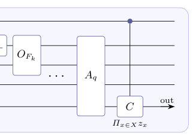
<figcaption class="paper-figure-caption"><b>Fig 1.</b> Fig. 1. Circuit implementation of Poisson phase smoothing. The random phase data z = (zx) is stored in the register Θ. Before each oracle call, Θ controls the address phase R−|x⟩= z∗ x|x⟩. After Aq has coherently produced the output address set X, the final controlled compensation contributes Πx∈Xzx. Thus a history with query-count vector ν acquires net phase ⟨z, 1X −ν⟩.</figcaption>
</figure>
<figure class="paper-figure-card">
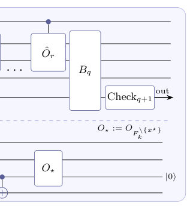
<figcaption class="paper-figure-caption"><b>Fig 2.</b> Fig. 2. Singleton zero-touch extraction by root-of-unity touch-count twirling. The unknown puncture is x⋆. Choose r ∈Zq+1 uniformly, let ω = e2πi/(q+1), and reuse the same r in all q simulated queries of B. Each ˆOr uses two calls to the singleton- punctured oracle O⋆= OF \{x⋆} k . The first call computes the response into the clean</figcaption>
</figure>
<figure class="paper-figure-card">
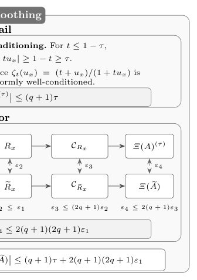
<figcaption class="paper-figure-caption"><b>Fig 3.</b> Fig. 3. Finite-precision implementation of Poisson smoothing. Top. Truncating the smoothing parameter to t ∈[0, 1 −τ] loses at most (q + 1)τ in expected singleton zero-touch mass and guarantees |1 + tux| ≥τ, making ζt(ux) = (t + ux)/(1 + tux) uni- form and computable. Bottom. After truncation, finite-precision error is propagated through sampling (t, ux), evaluation of the phase multipliers, implementation of the phase operators, and substitution into the smoothed q-query circuit. The term εt, εu is the additional numerical error incurred ζ(et, eux) at input discretization error. The re- maining arrows propagate this phase error through the implemented unitaries and the full smoothed...</figcaption>
</figure>
</div>

<p><strong>Summary.</strong> This theoretical paper proves that in the quantum setting, the security notion of Blind Unforgeability is strictly stronger than Plus-One Unforgeability. The authors achieve this by developing a new smoothing technique that allows them to transform any successful PO attack into a BU attack with minimal loss. This settles an open question regarding the relative strength of these two quantum security definitions.</p>
<p><strong>Why it may be interesting.</strong> While the topic is cryptography, the core mathematical tools—coherently reshaping quantum query histories and analyzing polynomial dependence on blinding parameters—are highly relevant to understanding robustness in quantum information protocols.</p>
<details>
<summary>Detailed structure</summary>
<p><strong>Main problem.</strong> The paper establishes the precise relationship between two security notions for quantum message authentication codes: Blind Unforgeability (BU) and Plus-One Unforgeability (PO).</p>
<p><strong>Main result.</strong> It proves that quantum Blind Unforgeability implies quantum Plus-One Unforgeability (BU $\Rightarrow$ PO), demonstrating that BU is strictly stronger than PO in the quantum setting.</p>
<p><strong>Method.</strong> The proof employs a novel smoothing technique that coherently rescales quantum query histories, transforming a successful PO attacker into a BU attacker with only inverse-polynomial loss.</p>
<p><strong>Model / system.</strong> The analysis is set in the context of quantum-accessible keyed function families $F_k: X 	o Y$, modeling quantum message authentication codes (MACs) accessed via quantum oracles.</p>
<p><strong>Key observables.</strong> The success probability of the adversary ($\delta$), the zero-touch forgery mass ($\Xi(A)$), and the singleton-puncture density ($
ho_F(A)$).</p>
<p><strong>Important parameters / regimes.</strong> The number of queries ($q$), the blinding probability ($eta$), and the security parameter ($\lambda$).</p>
<p><strong>Assumptions / limitations.</strong> The proof relies on a conceptual shift from simple history extraction to coherently reshaping quantum interference patterns, necessitating advanced smoothing techniques.</p>
<p><strong>Figures summary.</strong> References are made to figures illustrating error propagation and the structure of the proof, though specific content is not detailed.</p>
<p><strong>Paper structure.</strong> The paper progresses by first establishing the core implication (BU $\Rightarrow$ PO) using smoothing, then exploring related equivalences (BU $\iff \partial$BU), and finally detailing the mathematical machinery (polynomial analysis, derivatives at $eta=0$) required to quantify the security gap.</p>
</details>
<details>
<summary>Abstract</summary>
<p>We prove that quantum blind-unforgeability implies quantum plus-one unforgeability, settling an open question in the literature. Since plus-one unforgeability is known not to imply blind-unforgeability, our result establishes that blind-unforgeability is \emph{strictly stronger} than plus-one unforgeability in the quantum setting.   The implication is proven using a new \emph{smoothing} technique that coherently rescales the query histories of a quantum-query algorithm in a black-box manner. This enables us to transform any successful plus-one attacker into a blind-unforgeability attacker with only inverse-polynomial loss. Our proof represents a conceptual shift from merely extracting a useful query history as in earlier attempts, which we show inevitably fails in general, to first coherently reshaping how query histories interfere.</p>
</details>
<p><sub><a href="#top">↑ back to top</a></sub></p>

<p><a id="paper-2610.01714"></a></p>
<h3 id="complex-magnetic-phase-diagrams-in-tbmath957mathiralmath958mathgemath959math-and-ermath960mathiralmath961mathgemath962math"><a href="http://arxiv.org/abs/2610.01714v1">Complex magnetic phase diagrams in Tb$_2$IrAl$_4$Ge$_2$ and Er$_2$IrAl$_4$Ge$_2$</a></h3>
<p><strong>Authors:</strong> Karolina Gornicka, Matthew S. Cook, Brenden R. Ortiz, Andrew D. Christianson, Andrew F. May<br>
<strong>Type:</strong> experiment · <strong>Category:</strong> strongly correlated electrons · <strong>PDF:</strong> <a href="https://arxiv.org/pdf/2610.01714v1">https://arxiv.org/pdf/2610.01714v1</a><br>
<strong>Analysis basis:</strong> full PDF text, analyzed in chunks
<strong>Topic relevance:</strong> <code>analog quantum simulation</code> <strong>2/5</strong></p>
<div class="figure-strip-hint">↔ Scroll figures horizontally</div>
<div class="paper-figures-scroll">
<figure class="paper-figure-card">
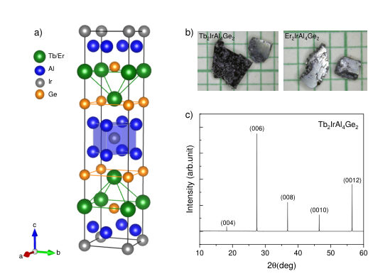
<figcaption class="paper-figure-caption"><b>Fig 1.</b> FIG. 1. (a) Crystal structure of Ln2IrAl4Ge2 highlight- ing the arrangement of Ln (green), Al (blue), Ir (grey), and Ge (orange) atoms. (b) Photographs of Er2IrAl4Ge2 and Tb2IrAl4Ge2 single crystals, showing their plate-like morphol- ogy. (c) X-ray diffraction pattern measured on a flat facet of a Tb2IrAl4Ge2 crystal, indicating that the crystal surface is parallel to the ab plane, with the c axis perpendicular to the surface.</figcaption>
</figure>
<figure class="paper-figure-card">
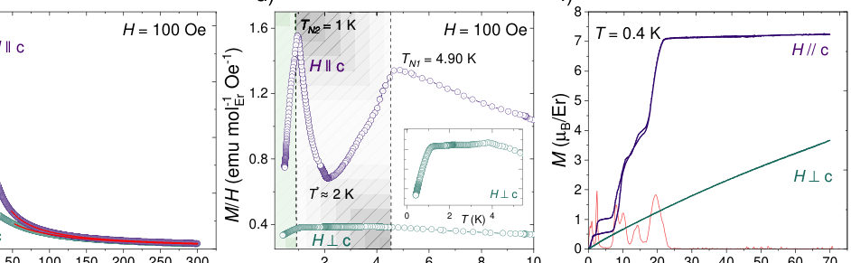
<figcaption class="paper-figure-caption"><b>Fig 2.</b> FIG. 2. (a,b) Field-cooled magnetization, M/H, for single-crystalline Tb2IrAl4Ge2 and Er2IrAl4Ge2 measured with magnetic field (H = 100 Oe) applied parallel and perpendicular to the crystallographic c axis. Data are shown over the temperature range 1.9 ≤T ≤300 K, together with the Curie-Weiss fits (red lines). (c,d) Enlarged low-temperature region highlighting the magnetic transitions. For Tb2IrAl4Ge2, a single antiferromagnetic transition is observed, while Er2IrAl4Ge2 exhibits three successive transitions at low temperatures. Insets in (c) and (d) highlights the magnetic behavior for H ⊥c. (e) Isothermal magnetization of the Tb-based compound at T = 2 K, showing two successive...</figcaption>
</figure>
<figure class="paper-figure-card">
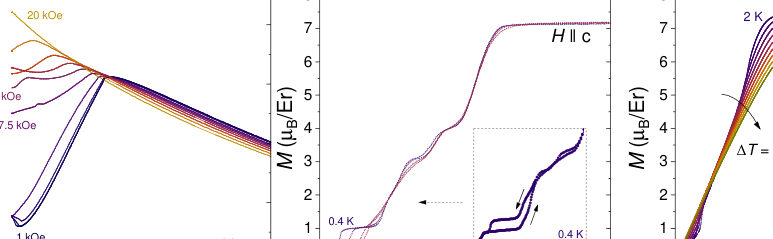
<figcaption class="paper-figure-caption"><b>Fig 3.</b> FIG. 3. Temperature- and field-dependent magnetization of Tb2IrAl4Ge2 and Er2IrAl4Ge2 measured with magnetic field applied parallel to the crystallographic c axis. (a) Magnetization for Tb-based compound, measured under selected magnetic fields up to 120 kOe. (b) Temperature evolution of the magnetization for H ∥c between 2 and 21 K. The inset highlights the high-field anomaly emerging near 8 K. (c) Selected M(H) curves measured at 7 and 9 K, illustrating additional field-induced phases. (d) M(T) data for Er2IrAl4Ge2 under magnetic fields ranging from 1 to 20 kOe. (e) Temperature evolution of the metamagnetic transitions measured between 0.4 and 1.2 K. The inset shows an enlarged view of...</figcaption>
</figure>
<figure class="paper-figure-card">
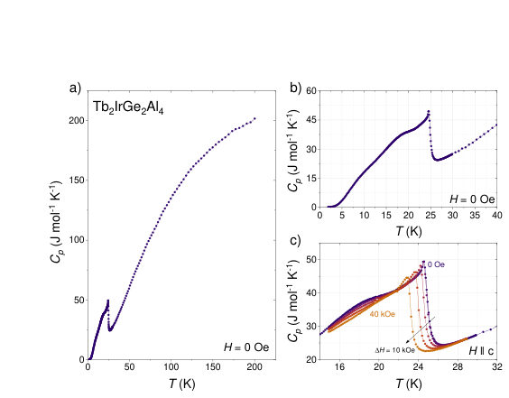
<figcaption class="paper-figure-caption"><b>Fig 4.</b> FIG. 4. Temperature dependence of the heat capacity Cp(T) of Tb2IrAl4Ge2. (a) Zero-field heat capacity measured between 1.9 and 200 K. (b) Enlarged view of the low-temperature region, showing a pronounced anomaly associated with the onset of long-range antiferromagnetic order. (c) Evolution of the low- temperature anomaly for magnetic fields up to 40 kOe applied along the crystallographic c axis.</figcaption>
</figure>
<figure class="paper-figure-card">
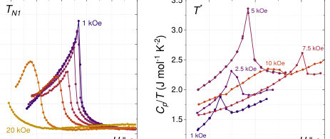
<figcaption class="paper-figure-caption"><b>Fig 5.</b> FIG. 5. Heat-capacity data for Er2IrAl4Ge2. (a) Temperature dependence of the zero-field heat capacity Cp(T). (b) Low- temperature Cp/T highlighting anomalies at TN1, T ∗, and TN2. (c) Field evolution of the anomaly at TN1 for H ∥c. (d) En- larged view of the T ∗region under applied magnetic field.</figcaption>
</figure>
</div>

<p><strong>Summary.</strong> This work reports on the synthesis and detailed magnetic characterization of $ ext{Tb}_2   ext{IrAl}_4 ext{Ge}_2$ and $    ext{Er}_2   ext{IrAl}_4 ext{Ge}_2$. The research reveals that the magnetic complexity increases substantially from the $    ext{Tb}$-based to the $ ext{Er}$-based compound, demonstrating a wide range of magnetic ground states within this structural family. This expands the known chemical space for studying correlated magnetism in $5d$-metal-based intermetallics.</p>
<p><strong>Why it may be interesting.</strong> The study of complex magnetic phase diagrams in strongly correlated materials like these aluminogermanides provides a rich platform for understanding competing magnetic interactions, which is relevant to many-body physics and frustrated magnetism.</p>
<details>
<summary>Detailed structure</summary>
<p><strong>Main problem.</strong> The study investigates the complex magnetic phase diagrams in the rare-earth intermetallic compounds $    ext{Tb}_2   ext{IrAl}_4 ext{Ge}_2$ and $    ext{Er}_2   ext{IrAl}_4 ext{Ge}_2$. The goal is to understand the magnetic behavior and expand the chemical space of the $  ext{Ln}_2   ext{MAl}_4  ext{Ge}_2$ family.</p>
<p><strong>Main result.</strong> The compounds exhibit strong magnetic anisotropy with the $c$-axis as the easy direction. $    ext{Er}_2   ext{IrAl}_4 ext{Ge}_2$ shows a significantly richer and more complex low-temperature magnetic phase diagram with multiple competing field-induced phases compared to $  ext{Tb}_2   ext{IrAl}_4 ext{Ge}_2$.</p>
<p><strong>Method.</strong> The research employed comprehensive experimental techniques including single-crystal X-ray diffraction, magnetization measurements ($   ext{M}(T),  ext{M}(H)$), heat capacity ($    ext{C}_p$), and magnetotransport measurements ($
ho,     ext{Hall}$ effect).</p>
<p><strong>Model / system.</strong> The physical system consists of single-crystalline $    ext{Tb}_2   ext{IrAl}_4 ext{Ge}_2$ and $    ext{Er}_2   ext{IrAl}_4 ext{Ge}_2$, which crystallize in the tetragonal $   ext{Tb}_2   ext{NiAl}_4 ext{Ge}_2$-type structure. The magnetic behavior is governed by the interplay between RKKY exchange interactions and Crystal-Electric-Field (CEF) effects.</p>
<p><strong>Key observables.</strong> Magnetization ($   ext{M}$), magnetic transition temperatures ($T_N, T^*$), nonlinear Hall response, electrical resistivity ($
ho$), and heat capacity ($   ext{C}_p$).</p>
<p><strong>Important parameters / regimes.</strong> The magnetic anisotropy is strong, with the $c$-axis being the easy magnetization direction. The complexity increases significantly when moving from $  ext{Tb}$ to $   ext{Er}$ compounds.</p>
<p><strong>Assumptions / limitations.</strong> The magnetic coupling is assumed to be influenced by the localized $4f$ moments of the rare-earth elements interacting via RKKY exchange within the crystal structure.</p>
<p><strong>Figures summary.</strong> The figures summarize $    ext{M}(T)$ and $    ext{M}(H)$ curves, showing the distinct magnetic transitions for both compounds, and magnetotransport data illustrating the coupling between charge transport and magnetic order.</p>
<p><strong>Paper structure.</strong> The paper details the synthesis and structural characterization of the single crystals, followed by a systematic presentation of magnetic measurements ($  ext{M}(T),  ext{M}(H)$) revealing the distinct phase diagrams for $ ext{Tb}$ and $  ext{Er}$ compounds, and concluding with a discussion on the implications for the $  ext{Ln}_2   ext{MAl}_4  ext{Ge}_2$ family.</p>
</details>
<details>
<summary>Abstract</summary>
<p>We report the synthesis and comprehensive investigation of single-crystalline Tb$_2$IrAl$_4$Ge$_2$ and Er$_2$IrAl$_4$Ge$_2$, the first Ir-based members of the $Ln_2M$Al$_4$Ge$_2$ family. Both compounds crystallize in the tetragonal Tb$_2$NiAl$_4$Ge$_2$-type structure (space group $I4/mmm$) and exhibit easy-axis magnetic anisotropy with the crystallographic $c$ axis as the preferred magnetization direction. Tb$_2$IrAl$_4$Ge$_2$ undergoes antiferromagnetic ordering below $T_N = 25$ K and develops a sequence of field-induced metamagnetic transitions accompanied by pronounced magnetotransport anomalies, including a nonlinear Hall response. In contrast, Er$_2$IrAl$_4$Ge$_2$ exhibits three successive zero-field magnetic transitions and a substantially richer low-temperature magnetic phase diagram comprising multiple competing field-induced phases confined to relatively modest magnetic fields. The differences between the Tb- and Er-based compounds demonstrate the wide range of magnetic behavior that can be realized within the \ce{Tb2NiAl4Ge2}-type structure. More broadly, the successful realization of Ir-based $Ln_2M$Al$_4$Ge$_2$ compounds considerably expands the accessible chemical space of this family and opens a route toward the exploration of related $4d$- and $5d$-based aluminogermanides.</p>
</details>
<p><sub><a href="#top">↑ back to top</a></sub></p>

<p><a id="paper-2610.01555"></a></p>
<h3 id="efficient-certification-of-time-reversal-symmetry-requires-entanglement"><a href="http://arxiv.org/abs/2610.01555v1">Efficient certification of time-reversal symmetry requires entanglement</a></h3>
<p><strong>Authors:</strong> Zhenhuan Liu, Zhenyu Du, Yifan Tang, Zi-Wen Liu, Jens Eisert, Ingo Roth<br>
<strong>Type:</strong> theory · <strong>Category:</strong> quantum information and computing · <strong>PDF:</strong> <a href="https://arxiv.org/pdf/2610.01555v1">https://arxiv.org/pdf/2610.01555v1</a><br>
<strong>Analysis basis:</strong> full PDF text, analyzed in chunks
<strong>Topic relevance:</strong> <code>quantum measurements</code> <strong>2/5</strong></p>
<div class="figure-strip-hint">↔ Scroll figures horizontally</div>
<div class="paper-figures-scroll">
<figure class="paper-figure-card">
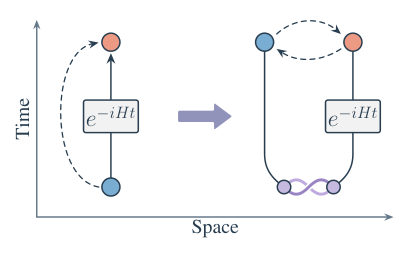
<figcaption class="paper-figure-caption"><b>Fig 1.</b> Figure 1. Quantum entanglement places the input and output of an evolution, which play asymmetric roles in time, on equal footing as two spatial subsystems. This translates dynamical time-reversal sym- metry into a spatial exchange constraint on the associated bipartite state, with symmetry breaking witnessed by an otherwise forbidden measurement outcome.</figcaption>
</figure>
<figure class="paper-figure-card">
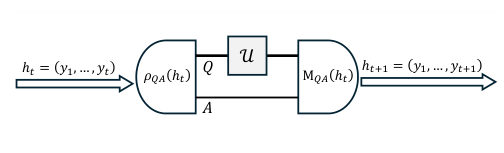
<figcaption class="paper-figure-caption"><b>Fig 2.</b> Figure 2. Adaptive protocol for certifying TRS with entangled input states and joint measurements.</figcaption>
</figure>
<figure class="paper-figure-card">
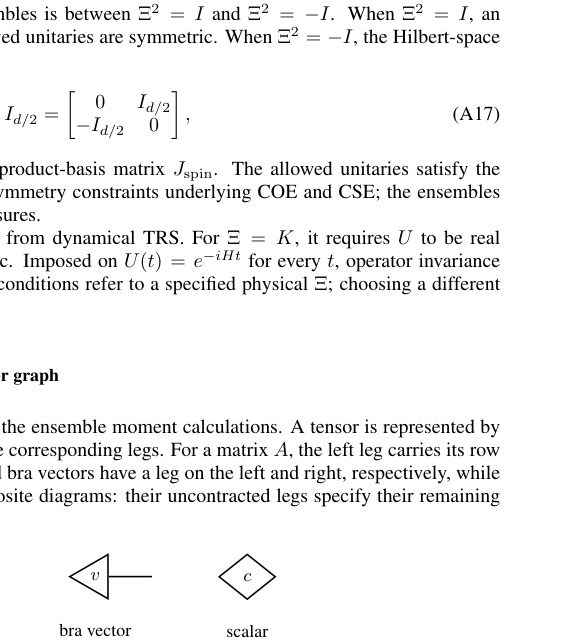
<figcaption class="paper-figure-caption"><b>Fig 3.</b> Figure 3. Basic graphical elements in the tensor-graph notation: a matrix, a ket vector, a bra vector, and a scalar.</figcaption>
</figure>
<figure class="paper-figure-card">
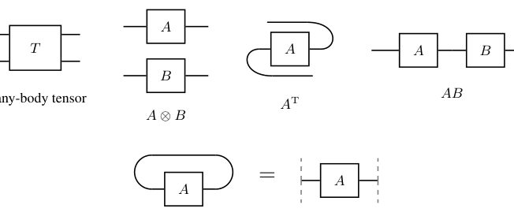
<figcaption class="paper-figure-caption"><b>Fig 4.</b> Figure 4. Elementary tensor-graph operations: a many-body tensor, tensor product, transpose, matrix multiplication, and two equivalent graphical representations of Tr(A), where the grey dashed lines represent the periodic boundary condition.</figcaption>
</figure>
<figure class="paper-figure-card">
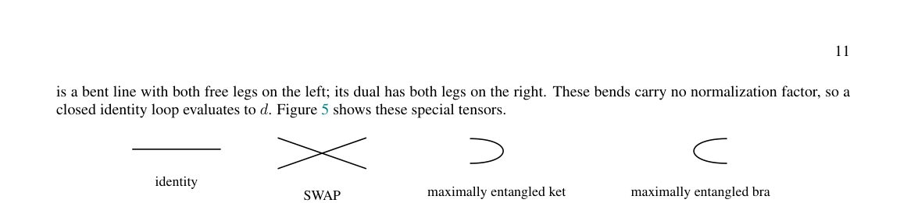
<figcaption class="paper-figure-caption"><b>Fig 5.</b> Figure 5. Special tensors in the tensor-graph notation: the identity, the SWAP operator, and the unnormalized maximally entangled state vector and its dual.</figcaption>
</figure>
</div>

<p><strong>Summary.</strong> This paper develops a quantum information-theoretic test to certify time-reversal symmetry (TRS) in unknown quantum dynamics. It proves that the efficiency of this test is fundamentally limited by the entanglement resources available in the quantum probes and measurements. By establishing a quantitative connection, it bridges fundamental physics principles with the resource theory of quantum information.</p>
<p><strong>Why it may be interesting.</strong> This work provides a rigorous, resource-theoretic understanding of fundamental physical symmetries (like TRS) within the framework of quantum information theory, connecting concepts like entanglement to physical laws.</p>
<details>
<summary>Detailed structure</summary>
<p><strong>Main problem.</strong> The paper addresses the fundamental question of how efficiently one can certify the presence of time-reversal symmetry (TRS) in an unknown quantum unitary evolution using only forward quantum queries.</p>
<p><strong>Main result.</strong> It establishes a quantitative lower bound on the query complexity required for this certification, showing that entanglement resources dictate the scaling, and demonstrates protocols that achieve this optimal scaling.</p>
<p><strong>Method.</strong> The authors formulate a Bell-inequality-like test for dynamical TRS, analyzing the required number of queries by relating it to the logarithmic negativities of the quantum probes and measurements.</p>
<p><strong>Model / system.</strong> The system involves an unknown $n$-qubit unitary channel $U(t) = e^{-iHt}$ whose time-reversal symmetry is tested by comparing its dynamics against known time-reversal symmetric ensembles.</p>
<p><strong>Key observables.</strong> Logarithmic negativity ($E_N$) of the probe and measurement, and the query complexity $T$ needed to distinguish TRS from Haar-random dynamics.</p>
<p><strong>Important parameters / regimes.</strong> The query complexity scales as $\Theta(2n - e^*)$, where $e^*$ is the minimum logarithmic negativity of the probe or measurement.</p>
<p><strong>Assumptions / limitations.</strong> The analysis assumes only forward access to the unitary channel and relies on the existence of specific entanglement resources (probes and measurements) to achieve the bounds.</p>
<p><strong>Figures summary.</strong> Figures illustrate the protocol structure, showing how entanglement translates the temporal input-output relation into a measurable spatial exchange symmetry constraint.</p>
<p><strong>Paper structure.</strong> The paper develops the test formulation, derives the lower bounds based on entanglement measures, and then presents protocols that match these bounds, including specialized versions for fixed resources and those without auxiliary systems.</p>
</details>
<details>
<summary>Abstract</summary>
<p>Time-reversal symmetry is a fundamental principle of physics describing the invariance of physical laws under reversal of the direction of time. We formulate a Bell-inequality-like test of this antiunitary symmetry using only forward access and trusted quantum operations: entanglement converts temporal input--output relations into measurable spatial exchange symmetry. For $n$-qubit unitary dynamics, we prove that reliably distinguishing the time-reversal-symmetric circular ensembles from Haar-random dynamics requires $Ω(\min\{2^{n/2},2^{n-e}\})$ queries for any classically adaptive protocol. Here, $e=\min\{e_{\mathrm s},e_{\mathrm m}\}$ with $e_{\mathrm s}$ and $e_{\mathrm m}$ representing the probe and measurement logarithmic entanglement negativities, respectively. Maximally entangled probes and SWAP measurements reduce this cost to a constant number of queries. Furthermore, we develop a time-reversal symmetry test for arbitrary fixed, compatible probes and measurements, relate its query complexity to their logarithmic negativities, and match the lower-bound scaling in the high-entanglement regime by optimizing the probe and measurement. Our results establish a quantitative connection between entanglement and time-reversal symmetry, bridging two central concepts in quantum information science and fundamental physics.</p>
</details>
<p><sub><a href="#top">↑ back to top</a></sub></p>

<p><a id="paper-2610.00565"></a></p>
<h3 id="electronic-symmetry-and-femtosecond-coherence-dynamics-of-renner-teller-mixed-neutral-vibronic-states-in-carbon-dioxide"><a href="http://arxiv.org/abs/2610.00565v1">Electronic Symmetry and Femtosecond Coherence Dynamics of Renner-Teller-Mixed Neutral Vibronic States in Carbon Dioxide</a></h3>
<p><strong>Authors:</strong> Eric Liu, Shashank Kumar, Siddhant Pandey, Tzu-Hsien Tan, Russell Zimmerman, Kousik Bera, Anthony Fiore, Paul Hockett, Varun Makhija, Niranjan Shivaram<br>
<strong>Type:</strong> experiment · <strong>Category:</strong> other · <strong>PDF:</strong> <a href="https://arxiv.org/pdf/2610.00565v1">https://arxiv.org/pdf/2610.00565v1</a><br>
<strong>Analysis basis:</strong> full PDF text, analyzed in chunks
<strong>Topic relevance:</strong> <code>quantum measurements</code> <strong>2/5</strong></p>
<div class="figure-strip-hint">↔ Scroll figures horizontally</div>
<div class="paper-figures-scroll">
<figure class="paper-figure-card">
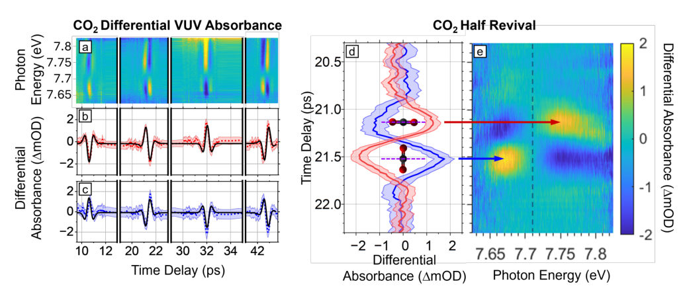
<figcaption class="paper-figure-caption"><b>Fig 1.</b> Figure 1. (a) Differential absorbance versus photon energy and delay τ; data between the fractional revivals are omitted. (b),(c) Lineouts at 7.75 and 7.67 eV (dotted, with standard-error bands) and the ORRCS fits (black). The revivals appear with opposite polarity. (d) Lineouts at 7.75 eV (red) and 7.67 eV (blue) across the half revival. The ensemble is aligned parallel to the VUV polarization (dashed purple) near 21.15 ps and perpendicular near 21.5 ps. (e) Differential absorbance spectrum at the half revival; arrows connect the lineouts in (d) to the spectral features, which change sign at 7.71 eV (dashed line).</figcaption>
</figure>
<figure class="paper-figure-card">
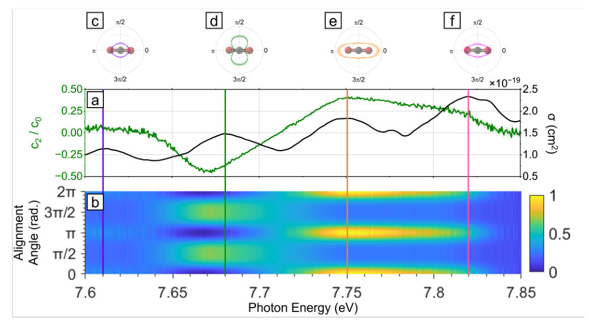
<figcaption class="paper-figure-caption"><b>Fig 2.</b> Figure 2. (a) Anisotropy ratio c2/c0 (green; &gt; 0 parallel, &lt; 0 perpendicular) with the calculated room temperature CO2 absorption cross- section of Ref. [11] (black). (b) Extracted ∆OD versus molecular alignment angle θ and photon energy. (c-f) Polar lineouts at 7.61 eV (purple), 7.68 eV (green), 7.75 eV (orange), and 7.82 eV (pink) as a function of the angle θ from the molecular axis, on a common radial scale.</figcaption>
</figure>
<figure class="paper-figure-card">
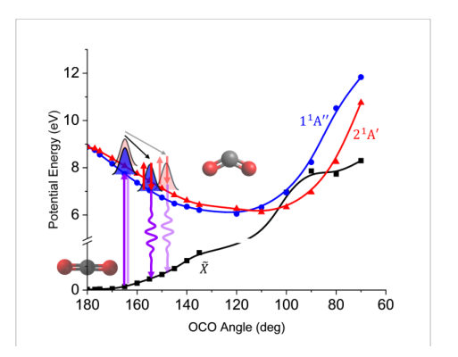
<figcaption class="paper-figure-caption"><b>Fig 3.</b> Figure 4. Cuts through the potential energy surfaces of the ground electronic state ˜X (black) and the excited 11A′′ (blue) and 21A′</figcaption>
</figure>
<figure class="paper-figure-card">
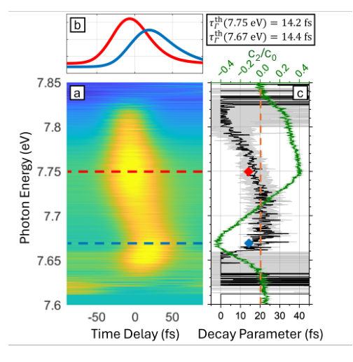
<figcaption class="paper-figure-caption"><b>Fig 4.</b> Figure 3. (a) Fitted exponentially modified Gaussian (EMG) traces near VUV–NIR overlap; positive delay denotes the VUV pulse arriv- ing first. The features at 7.65 eV and 7.75 eV are NIR-shifted relative to the field-free spectrum. (b) EMG lineouts at 7.75 eV (red) and 7.67 eV (blue) [dashed lines in (a)]. (c) Fitted EMG decay parameter τd (black) and c2/c0 (green) versus photon energy; the dashed orange line marks the fixed cross-correlation width σ = 20.2 fs. Diamonds: linewidth-limited dephasing times τth Γ from the calculated cross sec- tion of Ref. [11] (Supplemental Material [20]), listed in the inset.</figcaption>
</figure>
<figure class="paper-figure-card">
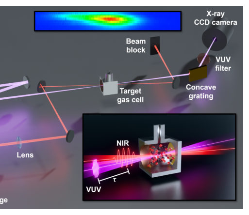
<figcaption class="paper-figure-caption"><b>Fig 5.</b> Figure 5. Schematic of the experimental setup.</figcaption>
</figure>
</div>

<p><strong>Summary.</strong> The researchers used VUV transient absorption on aligned $ ext{CO}_2$ to study vibronic states split by the Renner-Teller effect. By analyzing molecular-frame angular signatures, they separated states based on their electronic symmetry ($A'$ vs. $A''$). They found that the coherence lifetime differs between these symmetry classes, providing direct evidence that the excited-state potential energy surface topology dictates the rate of wavepacket dephasing.</p>
<p><strong>Why it may be interesting.</strong> This work provides a direct, ultrafast spectroscopic method to map out the symmetry-resolved dynamics on coupled excited-state potential energy surfaces, which is crucial for understanding non-adiabatic processes in molecular physics.</p>
<details>
<summary>Detailed structure</summary>
<p><strong>Main problem.</strong> To resolve and characterize the symmetry-dependent ultrafast dynamics of vibronic states in molecules where electronic states are mixed due to non-adiabatic coupling.</p>
<p><strong>Main result.</strong> The parallel ($A'$) vibronic states dephase measurably faster than the perpendicular ($A''$) states, which is attributed to the distinct, anharmonic topology of the $A'$ excited-state potential energy surface.</p>
<p><strong>Method.</strong> Vacuum-ultraviolet (VUV) transient absorption spectroscopy of aligned $ ext{CO}_2$ molecules, combined with molecular-frame angular signature analysis.</p>
<p><strong>Model / system.</strong> The system is $ ext{CO}_2$ undergoing Renner-Teller splitting, leading to vibronic states ($A'$ and $A''$). Dynamics are probed by measuring coherence dephasing times ($    au_d$) across the vibronic manifold.</p>
<p><strong>Key observables.</strong> Molecular-frame anisotropy ($c_2/c_0$), differential absorption spectrum ($\Delta	ext{OD}$), and symmetry-dependent coherence dephasing times ($    au_d$).</p>
<p><strong>Important parameters / regimes.</strong> Femtosecond delay ($    au$) between VUV and NIR pulses; the energy difference between $A'$ and $A''$ states.</p>
<p><strong>Assumptions / limitations.</strong> The analysis relies on reconstructing molecular-frame information from lab-frame measurements and modeling the coherence decay using an Exponentially Modified Gaussian (EMG) distribution.</p>
<p><strong>Figures summary.</strong> Figures show $\Delta	ext{OD}$ vs. delay $  au$ revealing rotational dynamics, anisotropy plots confirming parallel/perpendicular character, and $  au_d$ vs. energy plots demonstrating the symmetry-dependent decay rates.</p>
<p><strong>Paper structure.</strong> The paper systematically uses alignment-resolved VUV transient absorption to first map the symmetry landscape via anisotropy, and then uses time-resolved measurements to extract symmetry-specific coherence dephasing times, linking these lifetimes to the underlying potential energy surface topology.</p>
</details>
<details>
<summary>Abstract</summary>
<p>When non-adiabatic coupling mixes electronic states of a molecule, vibronic states of different electronic symmetry become interleaved across the same spectral region. The symmetry of these states cannot be accessed in conventional spectroscopy due to orientation averaging. We show that molecular-frame angular signatures, which are preserved even when states with different symmetry overlap in energy, can be used to resolve them. Using vacuum-ultraviolet transient absorption spectroscopy of aligned carbon dioxide molecules, we separate two electronically distinct classes of vibronic states ($A^{'}$ and $A^{''}$) that arise from Renner-Teller splitting of the $^1Δ_u$ state. We reconstruct molecular-frame anisotropy continuously across the vibronic manifold showing that the anisotropy crosses over from perpendicular to parallel transition character and maps the interleaved electronic symmetry landscape. By scanning the femtosecond delay between the VUV and a near-infrared pulse through temporal overlap, we measure symmetry-dependent coherence dephasing times of these states and find that the parallel ($A^{'}$) states dephase faster than the perpendicular ($A^{''}$) states. We attribute this to faster departure of the $A^{'}$ wavepacket from the Franck-Condon region due to the distinct topology of the $A^{'}$ excited-state surface. These measurements probe symmetry-resolved ultrafast wavepacket dynamics on the coupled excited-state potential energy surfaces.</p>
</details>
<p><sub><a href="#top">↑ back to top</a></sub></p>

<p><a id="paper-2610.01992"></a></p>
<h3 id="geometry-of-knill-laflamme-coefficients-for-pauli-error-detection"><a href="http://arxiv.org/abs/2610.01992v1">Geometry of Knill-Laflamme Coefficients for Pauli Error Detection</a></h3>
<p><strong>Authors:</strong> Baisong Sun, Ningping Cao, Yiu Tung Poon, Bei Zeng<br>
<strong>Type:</strong> theory · <strong>Category:</strong> quantum information and computing · <strong>PDF:</strong> <a href="https://arxiv.org/pdf/2610.01992v1">https://arxiv.org/pdf/2610.01992v1</a><br>
<strong>Analysis basis:</strong> full PDF text, analyzed in chunks
<strong>Topic relevance:</strong> <code>quantum measurements</code> <strong>2/5</strong></p>
<div class="figure-strip-hint">↔ Scroll figures horizontally</div>
<div class="paper-figures-scroll">
<figure class="paper-figure-card">
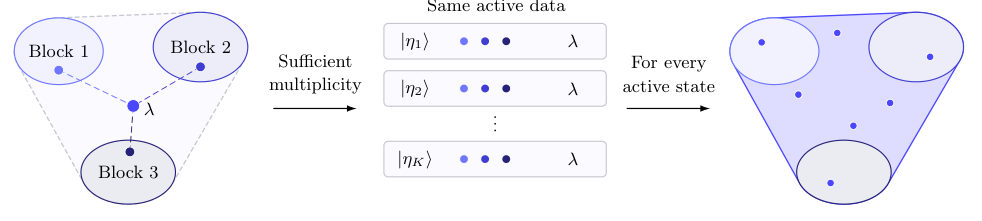
<figcaption class="paper-figure-caption"><b>Fig 1.</b> FIG. 1. Representation multiplicity as a mechanism for exact scalar compression. (a) Expectations from the active blocks combine to give a selected vector λ in the active state-space expectation body W(B). (b) Under the state-dependent sufficient condition of Theorem III.1, multiplicity permits a realization by K orthogonal code states with the same active data; every observable compresses to a scalar on their span. (c) Under the theorem’s uniform sufficient condition, this construction realizes every point of W(B). The compression range is then convex and connected, and its signature spectrum is a closed interval. The shapes are schematic; the colored marks in (b) represent the same active...</figcaption>
</figure>
<figure class="paper-figure-card">
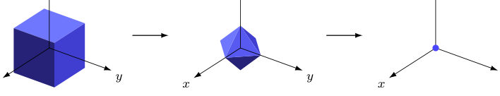
<figcaption class="paper-figure-caption"><b>Fig 2.</b> FIG. 2. Rank-sensitive joint compression ranges for EZ = (Z1, Z2, Z3), whose common eigensector multiplicity is M = 1. At K = M = 1 the range is the cube [−1, 1]3; once K &gt; M, it is the octahedron |x| + |y| + |z| ≤1 at rank two, collapses to the origin at ranks three and four, and is empty for K ≥5.</figcaption>
</figure>
<figure class="paper-figure-card">
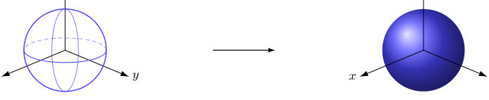
<figcaption class="paper-figure-caption"><b>Fig 3.</b> FIG. 3. Rank-2 sphere-to-ball transition for the full noncentral gauge triple of the [[4, 1; 1, 2]] subsystem block, with K = Dact = 2 and M = 23−q. (a) For q = 2, one has M = 2 = K &lt; KDact = 4, and the range is the Bloch sphere. (b) For q ∈{0, 1}, one has M ∈{4, 8} and hence M ≥KDact = 4, and the range is the filled Bloch ball.</figcaption>
</figure>
<figure class="paper-figure-card">
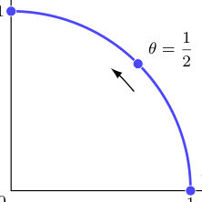
<figcaption class="paper-figure-caption"><b>Fig 4.</b> FIG. 4. Parent-Hamiltonian interpolation for the two-qubit example. The rank-two ground projector traces the first- quadrant unit-circle arc in the (λZZ, λXI) plane as θ varies from 0 to 1. The arrow indicates increasing θ.</figcaption>
</figure>
<figure class="paper-figure-card">
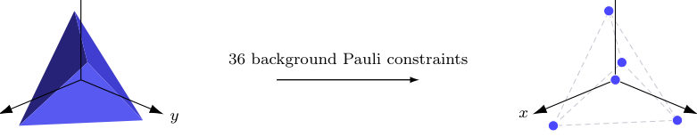
<figcaption class="paper-figure-caption"><b>Fig 5.</b> FIG. 5. Effect of the background constraints on the monitored tuple Etet = (Z1, Z2, Z1Z2). (a) Without additional background constraints, the rank-two range is the continuous tetrahedron T. (b) The 36 noncommuting Pauli constraints in Fbg reduce the monitored range to the tetrahedron barycenter and its four vertices.</figcaption>
</figure>
</div>

<p><strong>Summary.</strong> This work develops a structural framework for analyzing the geometry of Knill-Laflamme coefficients in quantum error detection. It establishes that the geometric properties of the achievable coefficient range—such as convexity and interval structure—are directly controlled by the representation multiplicity of the underlying Pauli observables. This provides sharp criteria for understanding when error detection is robust and well-behaved.</p>
<p><strong>Why it may be interesting.</strong> It provides a rigorous mathematical framework for understanding the geometric constraints imposed by physical detectability requirements in quantum error correction, which is crucial for designing practical quantum hardware.</p>
<details>
<summary>Detailed structure</summary>
<p><strong>Main problem.</strong> The paper characterizes the geometry of Knill-Laflamme coefficients, which are used to quantify the feasibility of exact quantum error detection using Pauli observables.</p>
<p><strong>Main result.</strong> The attainability of coefficients is governed by the representation multiplicity; sufficient multiplicity ensures the coefficient range is convex and connected, leading to a simple interval for the signature spectrum.</p>
<p><strong>Method.</strong> The analysis uses concepts from convex geometry, specifically studying the joint higher-rank numerical range ($\Lambda_K(A)$) and its Euclidean norm image (the signature spectrum $\Sigma_K(A)$).</p>
<p><strong>Model / system.</strong> The model is quantum error correction applied to $n$-qubit systems, utilizing Pauli observables ($X, Y, Z$) and associated code spaces defined by projectors ($P$).</p>
<p><strong>Key observables.</strong> Joint higher-rank numerical range ($\Lambda_K(A)$) and the Signature Spectrum ($\Sigma_K(A)$).</p>
<p><strong>Important parameters / regimes.</strong> Code dimension ($K$), representation multiplicity, and the structure of the error constraints (e.g., commuting vs. noncommuting Pauli families).</p>
<p><strong>Assumptions / limitations.</strong> The analysis often assumes sufficient multiplicity to realize all active states, which leads to the desirable convex/interval structure.</p>
<p><strong>Figures summary.</strong> Figures illustrate how increasing multiplicity can expand the attainable range from a simple shape (like a Bloch sphere) to a filled ball, confirming the connection between multiplicity and geometric structure.</p>
<p><strong>Paper structure.</strong> The paper develops the theory by first defining the geometric constraints, then proving the main theorem relating multiplicity to convexity, and finally examining special cases like commuting Pauli families and subsystem stabilizer codes.</p>
</details>
<details>
<summary>Abstract</summary>
<p>Knill-Laflamme coefficients characterize exact quantum error detection through scalar compressions of error operators to the code space. For prescribed Pauli observables and a fixed code dimension, attainable coefficient vectors form a joint higher-rank numerical range, whose Euclidean norm image is the signature spectrum. We study how operator representation, code dimension, and detection constraints govern this geometry. Our main theorem identifies representation multiplicity as sufficient to lift active expectation data to exact scalar compressions: a lift exists whenever each occupied block has multiplicity at least the code dimension times the rank of the corresponding active state. When multiplicity suffices to realize all active states, the coefficient range is the full active expectation body and is therefore convex and connected, with a closed interval as its signature spectrum. This framework unifies commuting Pauli families, where sufficient common-eigenspace degeneracy yields polytopes, and subsystem stabilizer codes, where protected logical subsystems supply multiplicity spaces for noncommuting gauge observables. Explicit examples show how increasing the code dimension can make a range shrink, collapse, or become empty, while increasing multiplicity can turn a Bloch sphere into a filled ball. In the subsystem setting, parent-Hamiltonian constructions realize exact detecting codes as degenerate ground spaces, selecting distinguished vectors and continuous paths within these ranges. A final three-qubit example shows additional noncommuting detection constraints reduce a tetrahedral range to its barycenter and four vertices, producing a disconnected signature spectrum. The results provide a structural framework for Knill-Laflamme coefficient geometry and motivate sharper criteria for connected coefficient ranges and interval signature spectra under structured error models.</p>
</details>
<p><sub><a href="#top">↑ back to top</a></sub></p>

<p><a id="paper-2610.02006"></a></p>
<h3 id="magnetic-phase-diagrams-and-spin-hamiltonian-of-monoclinic-math1036math-ruclmath1037math-from-angle-dependent-torque-studies"><a href="http://arxiv.org/abs/2610.02006v1">Magnetic Phase Diagrams and Spin Hamiltonian of Monoclinic $α$-RuCl$_3$ from Angle-Dependent Torque Studies</a></h3>
<p><strong>Authors:</strong> Daniel Antoniou, Danrui Ni, John S. Pearce, Robert J. Cava, Amalia I. Coldea, Radu Coldea<br>
<strong>Type:</strong> both · <strong>Category:</strong> strongly correlated electrons · <strong>PDF:</strong> <a href="https://arxiv.org/pdf/2610.02006v1">https://arxiv.org/pdf/2610.02006v1</a><br>
<strong>Analysis basis:</strong> full PDF text, analyzed in chunks
<strong>Topic relevance:</strong> <code>analog quantum simulation</code> <strong>2/5</strong></p>
<div class="figure-strip-hint">↔ Scroll figures horizontally</div>
<div class="paper-figures-scroll">
<figure class="paper-figure-card">
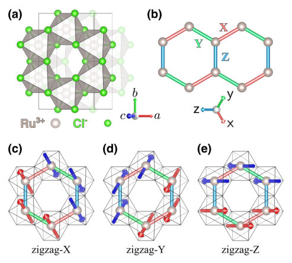
<figcaption class="paper-figure-caption"><b>Fig 1.</b> FIG. 1. (a) Monoclinic crystal structure of α-RuCl3 projected onto the ab plane, where the thin lines show the unit cell outline. (b) Schematic of the Ru honeycomb in the ab plane showing the X/Y/Z bonds (color-coded red/green/blue) with Kitaev exchange along the (cubic) x/y/z axes, respectively, shown in the lower triad. (c,d,e) Schematic of the zigzag-X, -Y and -Z antiferromagnetic order patterns discussed in the text.</figcaption>
</figure>
<figure class="paper-figure-card">
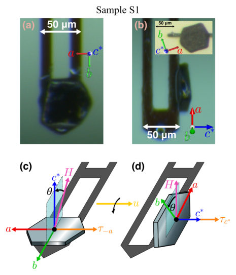
<figcaption class="paper-figure-caption"><b>Fig 2.</b> FIG. 2. (Top) Representative photographs of sample S1, mounted for torque measurements for field in the bc∗(left) and ab (right) planes, with the reference crystallographic a, b and c∗axes indicated by colored arrows. (Bottom) Corre- sponding schematic diagram of the piezocantilevers with the sample represented by a thin elongated hexagonal platelet, mounted on the top/side of the cantilever platform in the left/right panels. The transparent light-blue shaded vertical rectangle in the bottom panels indicates the plane of rotation, with the rotation angle θ defined (up to an offset) as the angle between a reference crystallographic axis in this plane and the (fixed) applied field H. The...</figcaption>
</figure>
<figure class="paper-figure-card">
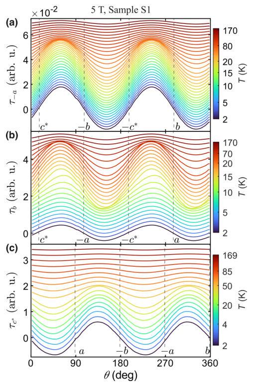
<figcaption class="paper-figure-caption"><b>Fig 3.</b> FIG. 3. Angular dependence of the torque for field in the bc∗, ac∗and ab planes, as a function of temperature (color- coded) at 5 T (sample S1). In each panel, curves are offset vertically by 0.002 for clarity. Dashed vertical lines and bot- tom labels indicate when the applied field is oriented along reference crystallographic axes. In (c), the four lowest tem- perature curves are scaled by ×0.5 for clarity.</figcaption>
</figure>
<figure class="paper-figure-card">
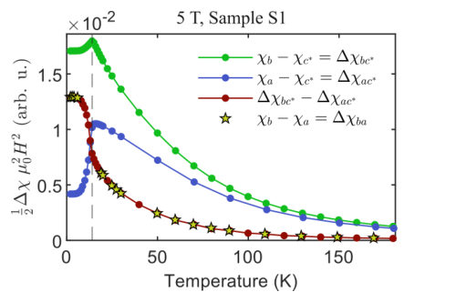
<figcaption class="paper-figure-caption"><b>Fig 4.</b> FIG. 4. Temperature dependence of the susceptibility anisotropy in the three crystallographic planes probed. Data points are the fitted amplitude A2 of the 2-fold Fourier compo- nent of the torque angular dependence as defined in Eqs. (1,2) and described in the text. The fitted raw torque data is from Fig. 3, collected in a field of 5 T. The vertical dashed line indicates TN.</figcaption>
</figure>
<figure class="paper-figure-card">
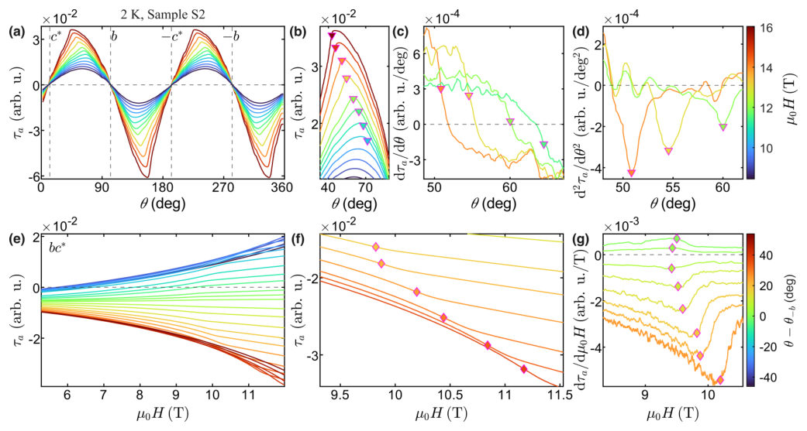
<figcaption class="paper-figure-caption"><b>Fig 5.</b> FIG. 5. Torque for field in the bc∗plane at 2 K (sample S2). (a) Angular dependence of the torque as a function of field magnitude (color coded). Top labels and dashed vertical lines indicate when the applied field is orientated along reference crystallographic axes. (b) Zoomed in section of (a), where kink anomalies are indicated by down triangles. These anomalies are clearly observed as points of steepest gradient in the first derivative in (c) and as local peaks in the second derivative in (d), where only a selection of the curves are plotted for clarity. (e) Torque as a function of field magnitude for a range of angles (color coded) on both sides of the −b axis. (f) Zoomed in section of...</figcaption>
</figure>
</div>

<p><strong>Summary.</strong> This work investigates the magnetic phase diagram of monoclinic $\alpha$-RuCl$_3$ using high-precision magnetic torque measurements. By analyzing the torque response in three orthogonal planes, the authors map out distinct magnetic phases and develop a minimal spin Hamiltonian tailored for the monoclinic symmetry. The findings highlight how structural details and sample morphology critically influence the observed magnetic ground state.</p>
<p><strong>Why it may be interesting.</strong> The detailed study of magnetic anisotropy and phase transitions in a strongly correlated Mott insulator like $\alpha$-RuCl$_3$ provides critical insights into the interplay between crystal symmetry, electronic correlations, and emergent magnetic order, which is central to modern condensed matter theory.</p>
<details>
<summary>Detailed structure</summary>
<p><strong>Main problem.</strong> To determine the magnetic phase diagrams and develop a spin Hamiltonian for the monoclinic phase of $\alpha$-RuCl$_3$ by analyzing magnetic anisotropy.</p>
<p><strong>Main result.</strong> The magnetic phase diagrams derived from small, monoclinic crystals differ significantly from rhombohedral samples, showing reduced symmetry and requiring higher fields to suppress magnetic order.</p>
<p><strong>Method.</strong> The study combines highly-sensitive piezo-cantilever magnetic torque measurements across three orthogonal planes with mean-field calculations based on a minimal monoclinic spin Hamiltonian.</p>
<p><strong>Model / system.</strong> The system is layered honeycomb $\alpha$-RuCl$_3$ with $\text{Ru}^{3+}$ moments governed by anisotropic exchange interactions, including Kitaev terms. The analysis specifically adapts the model to account for the low-symmetry monoclinic lattice structure.</p>
<p><strong>Key observables.</strong> Magnetic torque ($\tau$) as a function of field angle and magnitude; anomalies in torque and its derivatives used to locate phase transitions.</p>
<p><strong>Important parameters / regimes.</strong> Magnetic field up to 16 T; temperature transitions at 14 K; the difference in magnetic susceptibilities ($\chi_b - \chi_{c^*}$).</p>
<p><strong>Assumptions / limitations.</strong> The small sample size prevents the structural transition seen in bulk crystals, and the complex behavior of twinned samples is rationalized by superimposing the responses of the two constituent twins.</p>
<p><strong>Figures summary.</strong> Figures illustrate the monoclinic structure, schematic magnetic orders (zigzag-X, -Y, -Z), and show the angular and field dependence of the measured torque, which are compared against theoretical predictions.</p>
<p><strong>Paper structure.</strong> The paper progresses by first establishing the experimental setup and the unique nature of the monoclinic phase. It then uses torque measurements to map out the phase diagram, comparing results from single-crystal measurements to those from twinned samples, all guided by fitting to a minimal monoclinic spin Hamiltonian.</p>
</details>
<details>
<summary>Abstract</summary>
<p>The layered honeycomb $α$-RuCl$_3$ has been much explored as a candidate to display unconventional cooperative magnetism between spin-orbit entangled $j_{\rm eff}=1/2$ Ru$^{3+}$ magnetic moments stabilized by strongly-frustrated, Kitaev and other bond-dependent anisotropic interactions. Most studies so far have focused on relatively large single crystals that undergo a structural phase transition from monoclinic to rhombohedral upon cooling below 150 K and a magnetic transition to zigzag order around 7 K. Here we study the magnetism of high-quality, very small (sub 100 $μ$m diameter) single crystals, which remain monoclinic upon cooling to low temperatures and display a sharp magnetic transition at 14 K. Using highly-sensitive piezo-cantilever magnetic torque measurements in fields up to 16 T, we report a comprehensive study of the magnetic phase diagrams for magnetic field rotated in three orthogonal crystallographic planes. Our extensive torque data collected upon varying almost continuously the angular orientation of the field as well as the field magnitude, allows clear detection of phase transitions via anomalies in the raw torque data and its higher order derivatives with respect to both angle and field magnitude. The obtained magnetic phase diagrams show many differences compared to rhombohedral samples, displaying reduced rotational symmetry, substantially higher fields required to suppress the spontaneous magnetic order, and distinct field-induced phases. We provide a direct comparison of the torque data with mean-field calculations for magnetic Hamiltonians appropriate for $α$-RuCl$_3$ allowing for the monoclinic lattice symmetry and propose minimal magnetic structure models for all explored regions of the magnetic phase diagrams.</p>
</details>
<p><sub><a href="#top">↑ back to top</a></sub></p>

<p><a id="paper-2610.02137"></a></p>
<h3 id="one-shot-any-code"><a href="http://arxiv.org/abs/2610.02137v1">One-Shot any Code</a></h3>
<p><strong>Authors:</strong> Andrew C. Yuan<br>
<strong>Type:</strong> theory · <strong>Category:</strong> quantum information and computing · <strong>PDF:</strong> <a href="https://arxiv.org/pdf/2610.02137v1">https://arxiv.org/pdf/2610.02137v1</a><br>
<strong>Analysis basis:</strong> full PDF text, analyzed in chunks
<strong>Topic relevance:</strong> <code>quantum measurements</code> <strong>2/5</strong></p>
<div class="figure-strip-hint">↔ Scroll figures horizontally</div>
<div class="paper-figures-scroll">
<figure class="paper-figure-card">
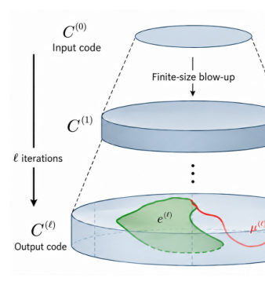
<figcaption class="paper-figure-caption"><b>Fig 1.</b> FIG. 1. Schematic of the RG construction. Physical and measurement errors only occur in the final output code C(ℓ).</figcaption>
</figure>
<figure class="paper-figure-card">
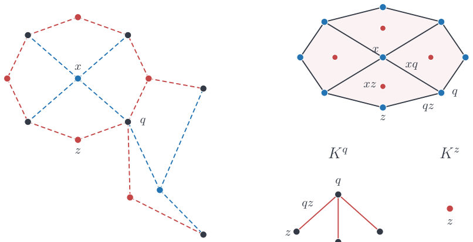
<figcaption class="paper-figure-caption"><b>Fig 2.</b> FIG. 2. Input Code and Local Cones. (a) A schematic portion of an input CSS code C: blue, black and red dots denote x-checks, qubits, and z-checks, respectively. Dashed lines denote check–qubit incidence; only selected cells and incidences are shown. (b) The local cones Kx, Kq, Kz in Definitions 104 and 106. In Kx, blue dots denote vertices x, q, z, black lines denote edges xq, qz, and red dots mark the shaded faces xz. In Kq, black dots denote vertices q, z and red lines denote edges qz; Kz consists of a single red vertex z. Only representative cell labels are shown. When glued together as in Remark 110, we obtain a CSS code with x-checks, qubits and z-checks, labeled as blue, black and...</figcaption>
</figure>
<figure class="paper-figure-card">
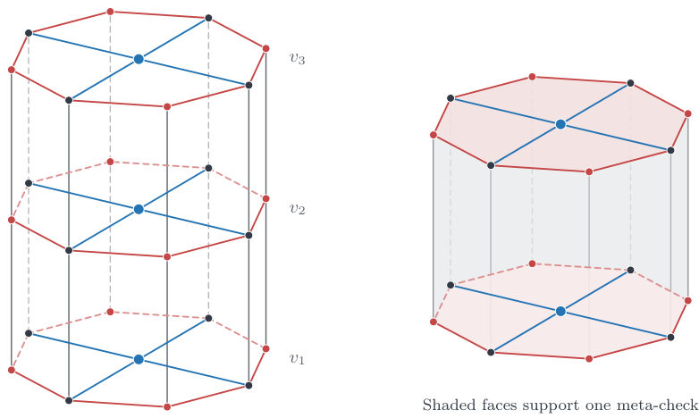
<figcaption class="paper-figure-caption"><b>Fig 3.</b> FIG. 3. Hollowed Tensor. (a) denotes Y x constructed from the local graph and cone of x as in Fig. 2. Note that the coloring of Y x</figcaption>
</figure>
<figure class="paper-figure-card">
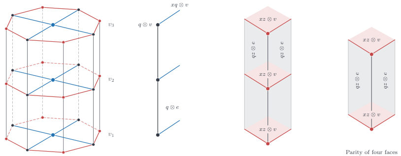
<figcaption class="paper-figure-caption"><b>Fig 4.</b> FIG. 4. Y x blocks. (a) An x-layer Y x as in Fig. 3a. (b) A q-block, with vertices q ⊗v and edges xq ⊗v, q ⊗e. (c) A z-block: red shaded faces denote xz ⊗v and gray shaded faces denote qz ⊗e. (d) A (z, e)-block for one repetition edge e; its parity is the F2 sum of the occupied faces among the two caps and two side faces. Open-ended edges in (b) meet x-vertices outside the block.</figcaption>
</figure>
<figure class="paper-figure-card">
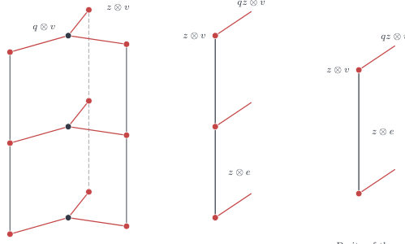
<figcaption class="paper-figure-caption"><b>Fig 5.</b> FIG. 5. Y q blocks. (a) A q-layer Y q. (b) A z-block, with vertices z ⊗v, spokes qz ⊗v, and rails z ⊗e. (c) A (z, e)-block for one repetition edge e; its parity is the F2 sum of the occupied edges among the two spokes and one rail. Open-ended spokes in (b), (c) meet q-vertices outside the block.</figcaption>
</figure>
</div>

<p><strong>Summary.</strong> This paper develops a method to upgrade any quantum error-correcting code to support single-shot (SS) syndrome measurements, a significant advance over traditional time-consuming syndrome extraction. By constructing an output code $   ext{[[nm, k]]}$ from an input code $    ext{[[n, k]]}$ using an efficient RG decoder, the authors demonstrate robust error suppression over many correction rounds. This breakthrough addresses the temporal bottleneck in fault-tolerant quantum computation.</p>
<p><strong>Why it may be interesting.</strong> This work provides a powerful, general framework for achieving fault-tolerant quantum computation by upgrading existing quantum codes to support single-shot syndrome measurements, which is crucial for scaling quantum memory and computation.</p>
<details>
<summary>Detailed structure</summary>
<p><strong>Main problem.</strong> The goal is to equip an arbitrary Quantum Low-Density Parity-Check (QLDPC) code with single-shot (SS) quantum error correction while maintaining bounded check weight and qubit degree.</p>
<p><strong>Main result.</strong> The authors show that any single-shot stabilizer code is self-correcting and provide a method to transform any input code into an output code with SS QEC, achieving error suppression $\Omega(m^\alpha n^eta)$.</p>
<p><strong>Method.</strong> The core method involves constructing an output code $  ext{[[nm, k]]}$ from an input $ ext{[[n, k]]}$ code using a renormalization-group (RG) decoder that runs efficiently in $O(\log m)$ parallel time.</p>
<p><strong>Model / system.</strong> The work analyzes Quantum Error Correction (QEC) using CSS QLDPC codes. The focus is on moving from conventional syndrome extraction (which requires multiple time steps) to single-shot syndrome measurements, controlling both physical and measurement noise.</p>
<p><strong>Key observables.</strong> Logical failure probability over $T$ rounds, error suppression $\Omega(m^\alpha)$, and the threshold $p_{	ext{RG}}$.</p>
<p><strong>Important parameters / regimes.</strong> The noise threshold $p_{	ext{RG}} > 0$, the error suppression exponent $\alpha > 0$, and the input/output code parameters $(n, k)$ and $(nm, k)$.</p>
<p><strong>Assumptions / limitations.</strong> The analysis assumes local stochastic (LS) rates for physical errors and measurement errors, and the construction does not require the code to have a three-dimensional geometric realization.</p>
<p><strong>Paper structure.</strong> The paper establishes the self-correcting nature of single-shot codes, proves the general transformation from any QLDPC code to an SS-correcting code, and analyzes the resulting error suppression bounds over multiple correction rounds.</p>
</details>
<details>
<summary>Abstract</summary>
<p>We first provide a simple proof showing that any single-shot code is self-correcting. We then show that any $[[n,k]]$ CSS quantum low-density parity-check (QLDPC) code can be transformed into an $[[nm,k]]$ CSS QLDPC code with single-shot (SS) quantum error correction and an efficient local decoder which runs in $O(\log m)$ parallel time. Below a constant threshold $p_{\rm RG}>0$ for joint local stochastic physical and measurement noise, the logical failure probability over $T$ correction rounds is bounded by \begin{equation<em>}   O(T n)\exp[-Ω(m^α)] \end{equation</em>} for a constant $α>0$; we say that the \textit{threshold} is $p_{\rm RG}$ and \textit{error suppression} is $Ω(m^α)$. Moreover, if the input code is equipped with a single-shot decoder with threshold $p_c>0$ and error suppression $Ω(n^β)$, then the output code \textit{enhances} the error suppression to $Ω(m^α n^β)$, while maintaining the decoder-independent threshold $p_{\rm RG}$, and thus \textit{enhanced} if $p_c < p_{\rm RG}$.</p>
</details>
<p><sub><a href="#top">↑ back to top</a></sub></p>

<p><a id="paper-2610.02113"></a></p>
<h3 id="quantum-advantage-for-two-party-differential-privacy"><a href="http://arxiv.org/abs/2610.02113v1">Quantum Advantage for Two-Party Differential Privacy</a></h3>
<p><strong>Authors:</strong> Daniel Alabi, Emil T. Khabiboulline<br>
<strong>Type:</strong> theory · <strong>Category:</strong> quantum information and computing · <strong>PDF:</strong> <a href="https://arxiv.org/pdf/2610.02113v1">https://arxiv.org/pdf/2610.02113v1</a><br>
<strong>Analysis basis:</strong> full PDF text, analyzed in chunks
<strong>Topic relevance:</strong> <code>quantum measurements</code> <strong>2/5</strong></p>
<div class="figure-strip-hint">↔ Scroll figures horizontally</div>
<div class="paper-figures-scroll">
<figure class="paper-figure-card">
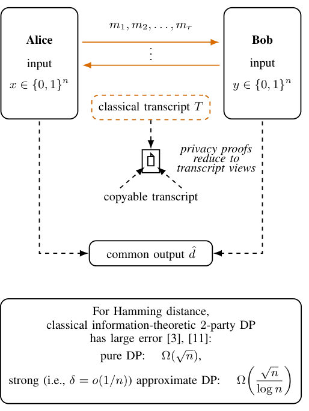
<figcaption class="paper-figure-caption"><b>Fig 1.</b> Fig. 1. Classical two-party differential privacy. Classical privacy proofs reduce to transcript views. The interaction transcript can be copied.</figcaption>
</figure>
<figure class="paper-figure-card">
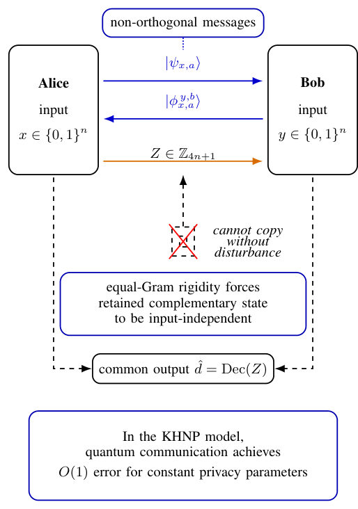
<figcaption class="paper-figure-caption"><b>Fig 2.</b> Fig. 2. Quantum two-party differential privacy in the KHNP model. Exact preservation of non-orthogonal messages prevents transcript copying and yields the quantum advantage.</figcaption>
</figure>
</div>

<p><strong>Summary.</strong> This work develops quantum protocols to compute the Hamming distance privately between two parties, achieving an $O(1)$ error rate under information-theoretic privacy guarantees. This significantly surpasses the classical lower bound of $\Omega(\sqrt{n})$ error required by classical protocols. The advantage stems from leveraging quantum mechanics in a specific honest-but-curious communication model.</p>
<p><strong>Why it may be interesting.</strong> The core concept of using quantum information theory (like non-orthogonality) to break classical information-theoretic lower bounds in privacy-preserving computation is highly relevant to quantum cryptography and secure quantum computation.</p>
<details>
<summary>Detailed structure</summary>
<p><strong>Main problem.</strong> The paper addresses achieving information-theoretically private quantum protocols for computing the two-party Hamming distance when both parties must output the same estimate.</p>
<p><strong>Main result.</strong> The authors demonstrate that quantum communication can achieve an $O(1)$ information-theoretic error rate, matching the accuracy available classically only under computational assumptions, by exploiting quantum principles in the Klauck's honest, nonpreemptive model.</p>
<p><strong>Method.</strong> The construction utilizes a 'guarded coherent round trip' and relies on the 'equal-Gram rigidity principle' to ensure privacy by preventing the observer from retaining input-dependent complementary information.</p>
<p><strong>Model / system.</strong> The analysis is set within quantum communication protocols, comparing different security models: Prescribed-channel (PC), Klauck's honest nonpreemptive view (KHNP), and Retention-robust (RR).</p>
<p><strong>Key observables.</strong> Expected error in estimating the Hamming distance, Quantum Differential Privacy (QDP) parameters ($\epsilon, \delta$), and communication complexity ($O(n)$ qubits/bits).</p>
<p><strong>Important parameters / regimes.</strong> Input length $n$, privacy parameters $\epsilon$ and $\delta$, and the separation between classical $\Omega(\sqrt{n})$ and quantum $O(1)$ error bounds.</p>
<p><strong>Assumptions / limitations.</strong> The quantum advantage is specific to the KHNP model and relies on the non-copyability of non-orthogonal quantum messages; it is not guaranteed against fully malicious retention-robust attacks.</p>
<p><strong>Figures summary.</strong> Figure 1 compares classical DP protocols showing the $\Omega(\sqrt{n})$ gap; Figure 2 illustrates the quantum advantage in the KHNP model using non-orthogonal messages.</p>
<p><strong>Paper structure.</strong> The paper establishes the problem gap classically, then introduces the quantum protocol using the guarded coherent round trip and rigidity principle. It details results for pure QDP and approximate QDP, concluding with a comparison to the fully retention-robust baseline.</p>
</details>
<details>
<summary>Abstract</summary>
<p>We introduce information-theoretically private quantum protocols for two-party Hamming distance when both parties must output the same estimate. Classically, for input length $n$, information-theoretic protocols require $Ω(\sqrt{n})$ error under pure differential privacy and $Ω(\sqrt{n}/\log n)$ error under strong approximate differential privacy, whereas computational security permits $O(1)$ error. In Klauck's honest, nonpreemptive, message-preserving model, we give an $O(n)$-communication quantum protocol with pure $\varepsilon$ quantum differential privacy (QDP) and expected error at most $\frac{2}{\sinh \varepsilon}+γ$, for every $γ>0$. For approximate $(\varepsilon, δ)$ QDP, an exact hockey-stick divergence calculation yields strictly smaller error, while preserving the $O(1)$-versus-$Ω(\sqrt{n}/\log n)$ separation for $δ=o(1/n)$. Thus, quantum communication achieves $O(1)$ information-theoretic error, matching the accuracy available classically only under computational assumptions.   The main construction uses a guarded coherent round trip and an equal-Gram rigidity principle that prevents an honest player from retaining input-dependent complementary information. We separate this model from weaker prescribed-channel privacy, which already admits an exact classical realization, and from fully retention-robust security, against which measurement-and-abort attacks remain possible. Therefore, we identify preservation of non-orthogonal quantum messages as a resource for privacy.</p>
</details>
<p><sub><a href="#top">↑ back to top</a></sub></p>

<p><a id="paper-2610.00467"></a></p>
<h3 id="quantum-information-in-high-energy-physics-a-top-subject"><a href="http://arxiv.org/abs/2610.00467v1">Quantum Information in High-Energy Physics: a top subject</a></h3>
<p><strong>Authors:</strong> Yoav Afik, Juan Ramón Muñoz de Nova<br>
<strong>Type:</strong> both · <strong>Category:</strong> other · <strong>PDF:</strong> <a href="https://arxiv.org/pdf/2610.00467v1">https://arxiv.org/pdf/2610.00467v1</a><br>
<strong>Analysis basis:</strong> full PDF text, analyzed in chunks
<strong>Topic relevance:</strong> <code>quantum measurements</code> <strong>2/5</strong></p>
<div class="figure-strip-hint">↔ Scroll figures horizontally</div>
<div class="paper-figures-scroll">
<figure class="paper-figure-card">
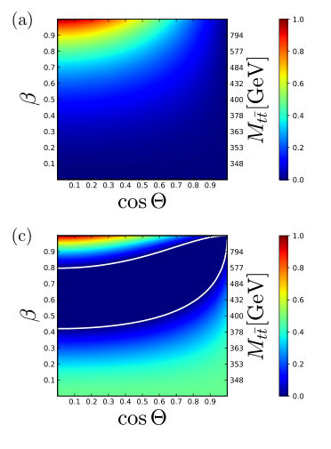
<figcaption class="paper-figure-caption"><b>Fig 1.</b> Figure 3: Concurrence as a function of (β, cos Θ). All plots are even functions of cos Θ. White lines indicate the boundaries between separability and entanglement. (a) C[ρq¯q]. (b) C[ρgg]. (c) C[ρ(√s)] for the COM energy of LHC Run 2, √s = 13 TeV. The PDF values used are proportioned by the NNPDF30LO PDF set [17]. (d) Relative cross section 1</figcaption>
</figure>
</div>

<p><strong>Summary.</strong> This work reviews the application of Quantum Information theory to High-Energy Physics, focusing on quantifying entanglement in $tar{t}$ quark pair production at the LHC. By proposing and detailing a quantum tomography protocol, the authors connect abstract quantum concepts to concrete, measurable observables like spin correlations. The research successfully established a framework that led to the experimental confirmation of entanglement in particle collisions.</p>
<p><strong>Why it may be interesting.</strong> The methodology of using entanglement diagnostics (like witnesses and concurrence) developed in pure QI theory to predict and interpret measurable cross-section deviations in particle physics is highly relevant for understanding quantum correlations in complex, non-equilibrium quantum systems.</p>
<details>
<summary>Detailed structure</summary>
<p><strong>Main problem.</strong> The paper aims to bridge the theoretical framework of Quantum Information (QI) with the experimental domain of High-Energy Physics (HEP) to study fundamental quantum features like entanglement.</p>
<p><strong>Main result.</strong> The authors detail how entanglement can be predicted and experimentally observed in top-antitop quark pair ($tar{t}$) production at colliders like the LHC, leading to the highest-energy observations of entanglement to date.</p>
<p><strong>Method.</strong> The study employs quantum tomography protocols and diagnostic tools like entanglement witnesses and concurrence to quantify non-separability in the density matrices describing the particle pair.</p>
<p><strong>Model / system.</strong> The primary system is the $tar{t}$ pair produced in high-energy collisions (e.g., $qar{q}$ or $gg$ fusion) at the LHC. The quantum state is modeled using density matrices ($
ho$) for two-qubit systems.</p>
<p><strong>Key observables.</strong> Entanglement (non-separability), spin correlations ($\langle \sigma_i \otimes \sigma_j 
angle$), and the entanglement witness parameter $D$.</p>
<p><strong>Important parameters / regimes.</strong> Invariant mass ($M_{tar{t}}$), collision energy ($\sqrt{s}$), and kinematic angles ($\cos\Theta$).</p>
<p><strong>Assumptions / limitations.</strong> The analysis relies on leading-order (LO) QCD calculations and assumes that the measured decay lepton angular distributions can reconstruct the initial quantum state.</p>
<p><strong>Figures summary.</strong> Figures illustrate Feynman diagrams for $tar{t}$ production and show the dependence of entanglement criteria (e.g., $\Delta_{gg} > 0$) and the differential cross-section on kinematic variables.</p>
<p><strong>Paper structure.</strong> The paper provides a comprehensive overview, first establishing the theoretical link between QI and HEP, then applying specific diagnostics (concurrence, witnesses) to the $tar{t}$ system across different production channels ($qar{q}$ vs $gg$), and concluding with the experimental realization and impact on the field.</p>
</details>
<details>
<summary>Abstract</summary>
<p>As a work selected for the Frontiers of Science Award, we present in the Proceedings of the ICBS an overview of how the techniques from the field of Quantum Information (QI) can be implemented in High-Energy Physics (HEP), including also some novel insights. We focus on the paradigmatic case of the top quark, a drosophila of a relativistic qubit. We study the presence of entanglement, perhaps the most genuine feature of Quantum Mechanics, in top-antitop quark production in high-energy colliders such as the LHC. We also analyze our experimental proposal of a quantum tomography protocol for the top-antitop quark pair, eventually leading to the entanglement observations by the ATLAS and CMS collaborations, which constituted the highest-energy observations of entanglement ever. We discuss how the concepts and techniques developed in our work have effectively spawned an already vast and rich field of QI in HEP.</p>
</details>
<p><sub><a href="#top">↑ back to top</a></sub></p>

<p><a id="paper-2610.00595"></a></p>
<h3 id="quantum-key-distribution-using-generalized-contextuality-against-post-quantum-eavesdroppers"><a href="http://arxiv.org/abs/2610.00595v1">Quantum key distribution using generalized contextuality against post-quantum eavesdroppers</a></h3>
<p><strong>Authors:</strong> Daniel Centeno, Roberto D. Baldijão, Maria Ciudad Alañón, Yujie Zhang, Pedro Lauand, Elie Wolfe<br>
<strong>Type:</strong> theory · <strong>Category:</strong> quantum information and computing · <strong>PDF:</strong> <a href="https://arxiv.org/pdf/2610.00595v1">https://arxiv.org/pdf/2610.00595v1</a><br>
<strong>Analysis basis:</strong> full PDF text, analyzed in chunks
<strong>Topic relevance:</strong> <code>quantum measurements</code> <strong>2/5</strong></p>
<div class="figure-strip-hint">↔ Scroll figures horizontally</div>
<div class="paper-figures-scroll">
<figure class="paper-figure-card">
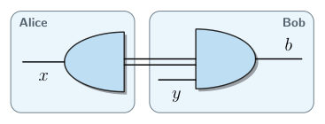
<figcaption class="paper-figure-caption"><b>Fig 1.</b> FIG. 1. Prepare-and-measure scenario. Alice chooses a prepa- ration Px in her laboratory and communicates the resulting physical system to Bob, who chooses a measurement My and obtains outcome b.</figcaption>
</figure>
<figure class="paper-figure-card">
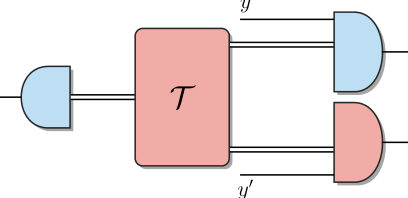
<figcaption class="paper-figure-caption"><b>Fig 2.</b> FIG. 3. Adversarial prepare-and-measure scenario in which Bob and Eve have independent settings y and y′ used in the optimization. The blue devices represent the trusted proce- dures and the red ones, the untrusted ones.</figcaption>
</figure>
<figure class="paper-figure-card">
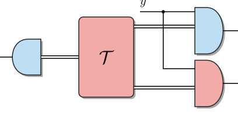
<figcaption class="paper-figure-caption"><b>Fig 3.</b> FIG. 2. Adversarial prepare-and-measure scenario allowing Eve to have access to y once the measurement of Bob is per- formed. The blue devices represent the trusted procedures and the red ones, the untrusted ones.</figcaption>
</figure>
<figure class="paper-figure-card">
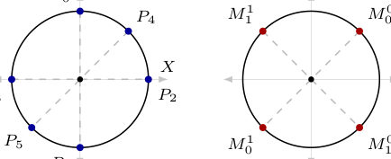
<figcaption class="paper-figure-caption"><b>Fig 4.</b> FIG. 4. Preparations and effects of the aligned-key protocol in the qubit realization, drawn in the X–Z plane: P0 = |0⟩, P1 = |1⟩, P2 = |+⟩, P3 = |−⟩, and P4, P5 the two antipodal states along (Z +X)/ √</figcaption>
</figure>
<figure class="paper-figure-card">
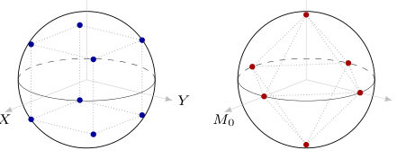
<figcaption class="paper-figure-caption"><b>Fig 5.</b> FIG. 5. The 3 →1 parity-oblivious random access code. The eight preparations Px0x1x2 sit at the vertices of a cube inscribed in the Bloch sphere, with Bloch vector  (−1)x0, (−1)x1, (−1)x2 / √</figcaption>
</figure>
</div>

<p><strong>Summary.</strong> This work analyzes QKD security by replacing the reliance on quantum theory with operational equivalences (OPEQs) derived from local measurements. It proves that generalized contextuality is necessary for a positive key rate against post-quantum eavesdroppers, but it is not sufficient. The study highlights that the operational structure itself, rather than just quantum mechanics, dictates the achievable security rate.</p>
<p><strong>Why it may be interesting.</strong> It provides a rigorous, operational framework for device-independent security that extends beyond standard quantum assumptions, linking fundamental concepts of nonclassicality (contextuality) to practical cryptographic security.</p>
<details>
<summary>Detailed structure</summary>
<p><strong>Main problem.</strong> The paper investigates whether generalized contextuality, a nonclassicality measure in prepare-and-measure settings, can provide a security guarantee for Quantum Key Distribution (QKD) against adversaries who are not restricted by quantum mechanics (post-quantum eavesdroppers).</p>
<p><strong>Main result.</strong> Contextuality is proven to be a necessary condition for achieving a positive key rate against such adversaries, but it is not sufficient, as demonstrated by specific counterexamples.</p>
<p><strong>Method.</strong> The analysis establishes operational equivalences (OPEQs) as theory-independent constraints and formulates the worst-case key rate as a finite linear program over extensions of observed statistics.</p>
<p><strong>Model / system.</strong> The model is a prepare-and-measure QKD scenario where Alice prepares a state and sends it to Bob for measurement. The security analysis is performed against an adversary (Eve) whose intervention is only constrained by the established OPEQs, not by quantum theory.</p>
<p><strong>Key observables.</strong> Worst-case asymptotic key rate, generalized contextuality, and operational equivalences.</p>
<p><strong>Important parameters / regimes.</strong> The key rate is bounded by maximizing Eve's guessing probability over all admissible attacks satisfying the OPEQs.</p>
<p><strong>Assumptions / limitations.</strong> The security analysis assumes that local operational equivalences established by Alice and Bob must be respected by any physical intervention on the channel, even by an adversary.</p>
<p><strong>Figures summary.</strong> Figure 1 illustrates the basic prepare-and-measure QKD setup. Other figures and tables compare key rates for various protocols (like CHSH) under different adversarial constraints.</p>
<p><strong>Paper structure.</strong> The paper first introduces the problem by comparing Bell nonlocality to generalized contextuality. It then develops the adversarial model using OPEQs, proving contextuality is necessary. Subsequently, it shows contextuality is not sufficient and concludes by comparing key rates achievable under quantum vs. post-quantum assumptions.</p>
</details>
<details>
<summary>Abstract</summary>
<p>Bell nonlocality allows secret key to be certified without trusting the internal operation of the devices, and even against eavesdroppers constrained only by the no-signaling principle. We ask whether generalized contextuality, a notion of nonclassicality available in prepare-and-measure experiments on a single system, can play an analogous role. In our approach, Alice and Bob first establish operational equivalences among their local preparation and measurement procedures, which are then treated as theory-independent constraints that any physical intervention on the communication channel, including that of an adversary, must respect. Eve is otherwise unrestricted, that is, her intervention on the transmitted system is not assumed to be described by quantum theory. Within this adversarial model, we show that Eve's optimal guessing probability against individual attacks is the solution of a finite linear program, and hence that a worst-case asymptotic key rate follows from the observed statistics and the operational equivalences alone. We prove that contextuality is necessary for a positive key rate. However, we also show that it is not sufficient. Concretely, the (3,2)-parity-oblivious random access code, known to yield secret key against a quantum eavesdropper, yields none certifiable key rate against a post-quantum one. Conversely, operational equivalences with no analogue among no-signaling constraints can strictly increase the asymptotic key rate. We illustrate this with the prepare-and-measure version of the standard CHSH protocol with an aligned key-generating setting.</p>
</details>
<p><sub><a href="#top">↑ back to top</a></sub></p>

<p><a id="paper-2610.01777"></a></p>
<h3 id="qufig-gnn-based-prediction-of-quantum-fault-injection-vulnerabilities-with-gate-level-precision"><a href="http://arxiv.org/abs/2610.01777v1">QUFIG: GNN-Based Prediction of Quantum Fault Injection Vulnerabilities with Gate-Level Precision</a></h3>
<p><strong>Authors:</strong> Shihan Zhao, Qiying Li, Ben Dong, Qian Wang, Yuntao Liu<br>
<strong>Type:</strong> both · <strong>Category:</strong> quantum information and computing · <strong>PDF:</strong> <a href="https://arxiv.org/pdf/2610.01777v1">https://arxiv.org/pdf/2610.01777v1</a><br>
<strong>Analysis basis:</strong> full PDF text, analyzed in chunks
<strong>Topic relevance:</strong> <code>QC/QI experiment</code> <strong>2/5</strong></p>
<div class="figure-strip-hint">↔ Scroll figures horizontally</div>
<div class="paper-figures-scroll">
<figure class="paper-figure-card">
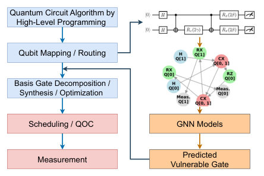
<figcaption class="paper-figure-caption"><b>Fig 1.</b> Fig. 1: An overview of the quantum-circuit vulnerability pre- diction framework, which uses a GNN to identify potentially vulnerable gates.</figcaption>
</figure>
<figure class="paper-figure-card">
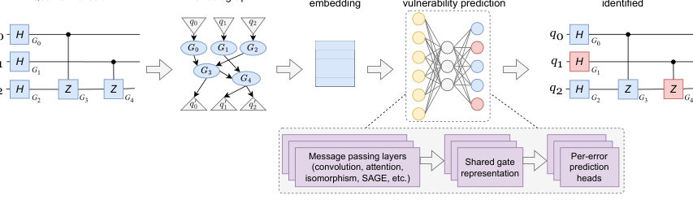
<figcaption class="paper-figure-caption"><b>Fig 2.</b> Fig. 2: Overview of the proposed learning-guided fault-site prioritization framework. A compiled quantum circuit is converted into a circuit DAG, where each gate node is encoded using gate-level structural features. A GNN backbone estimates per-fault impact scores through fault-specific prediction heads, and the top-ranked gate-fault pairs are selected under a fixed budget for detailed fault simulation, mitigation, or security auditing.</figcaption>
</figure>
<figure class="paper-figure-card">
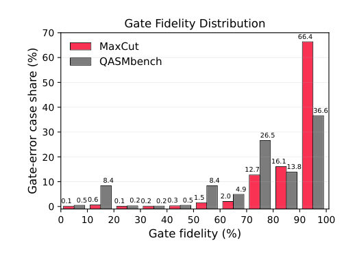
<figcaption class="paper-figure-caption"><b>Fig 3.</b> Fig. 3: Gate-level fidelity distribution under single-gate fault injection. The x-axis groups injected gate–error cases by the output fidelity between the faulty and ideal circuits, and the y- axis reports the percentage of cases in each bin. Lower fidelity indicates stronger output degradation. For example, only 0.1% and 0.5% cases reduce the output fidelity to lower than 10%, showing that severe faults are concentrated in a small subset.</figcaption>
</figure>
<figure class="paper-figure-card">
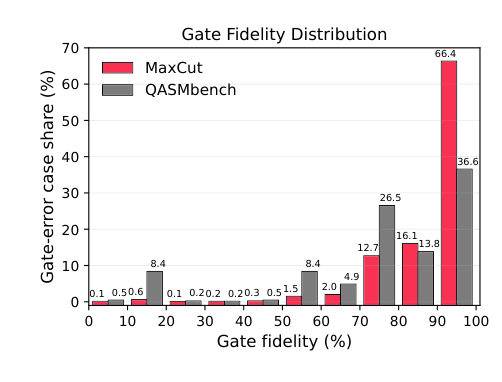
<figcaption class="paper-figure-caption"><b>Fig 4.</b> Fig. 3 shows the distribution of gate-level output fidelity under high-strength fault injection. The results reveal that fault sensitivity is highly non-uniform across both gates and datasets, rather than being evenly distributed throughout the circuit. As expected, only a small subset of gates causes substantial output degradation after noise injection, whereas most gates remain relatively stable and exhibit only minor fidelity fluctuations even under strong perturbations. The gates that can truly overturn the circuit outcome are rare, while the majority of gates are robust. To further examine whether vulnerable gates are associated with specific depth regions, we identify, for each...</figcaption>
</figure>
<figure class="paper-figure-card">
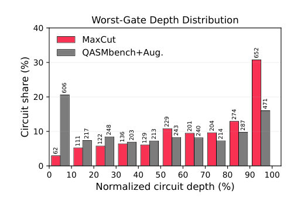
<figcaption class="paper-figure-caption"><b>Fig 5.</b> Fig. 4: Position distribution of the most vulnerable gates. For each circuit, The x-axis shows 10% position bins which compute most vulnerable gate normalized position as gate index/total gates. The y-axis reports the the percentage of circuits whose most vulnerable gate falls into each bin. Numbers above bars indicate circuit counts. The dataset- dependent distribution shows that simple position-based traver- sal is insufficient for reliable vulnerable-gate detection.</figcaption>
</figure>
</div>

<p><strong>Summary.</strong> QUFIG is a novel GNN-based framework designed to predict which specific gates in a quantum circuit are most vulnerable to fault injection attacks. By learning from circuit structure and fault impact, it allows quantum designers to prioritize fault simulation and auditing, drastically reducing the computational cost required to ensure quantum circuit reliability.</p>
<p><strong>Why it may be interesting.</strong> This work directly tackles the practical security and reliability challenges of near-term quantum hardware, which is crucial for any theoretical physicist working on quantum algorithms or open quantum systems that must be implemented on noisy devices.</p>
<details>
<summary>Detailed structure</summary>
<p><strong>Main problem.</strong> The paper addresses the critical challenge of identifying quantum fault injection vulnerabilities at gate-level precision in large-scale, cloud-based quantum computing workflows.</p>
<p><strong>Main result.</strong> The proposed framework, QUFIG, significantly reduces the number of gates requiring manual inspection (by 2.9%–19.8%) while maintaining the ability to identify high-impact vulnerable gate-fault pairs compared to random or depth-based heuristics.</p>
<p><strong>Method.</strong> It formulates the problem as a learning-guided prioritization task, using a Graph Neural Network (GNN) backbone trained to predict a vulnerability score for every potential gate-fault pair.</p>
<p><strong>Model / system.</strong> The system analyzed is a quantum circuit, represented abstractly as a Directed Acyclic Graph (DAG) where nodes are quantum gates and edges represent qubit dependencies. Faults are modeled using realistic NISQ error mechanisms (decoherence, Pauli-type, etc.).</p>
<p><strong>Key observables.</strong> Vulnerability Score (predicted impact on circuit fidelity), Fidelity Loss ($\Delta F$), and Application-level Output Deviation ($\Delta E$).</p>
<p><strong>Important parameters / regimes.</strong> The inspection budget ($B$) and the target percentage ($q\%$) of the most vulnerable gates to recover.</p>
<p><strong>Assumptions / limitations.</strong> The core assumption is that prioritizing inspection based on the predicted vulnerability score is sufficient to guide fault analysis, avoiding prohibitively expensive exhaustive simulation.</p>
<p><strong>Figures summary.</strong> Figures compare the target-recovery cost (inspection cost vs. percentage of vulnerable gates identified) for QUFIG against random and depth-based baselines on QASMbench and MaxCut, showing superior performance for QUFIG.</p>
<p><strong>Paper structure.</strong> The paper introduces the problem, details the formulation of fault impact using fidelity loss and application deviation, proposes the GNN-based QUFIG framework trained via a hybrid loss function, and validates its efficiency by comparing inspection costs against established heuristics on standard quantum benchmarks.</p>
</details>
<details>
<summary>Abstract</summary>
<p>The growing scale and accessibility of quantum hardware exposed new reliability and security challenges in the quantum computing workflow, such as the run-time fault injection attacks in cloud-based quantum computing platforms. However, existing works fail to identify vulnerabilities with gate-level precision or adapt to run-time environments. In this work, we formulate gate-level fault analysis as a learning-guided prioritization problem under restricted fidelity budgets. The framework uses a circuit-DAG-based GNN backbone to predict the vulnerability score of each gate to each type of injected fault, defined as the impact of the gate-fault pair on circuit fidelity. The gate-fault pairs are then ranked by their vulnerability score. Experiments on QASMbench and HamLib MaxCut show that QUFIG recovers high-impact vulnerable gate-fault pairs with fewer inspections than random and depth-based heuristics. Our results show that QUFIG can reduce the number of gates requiring inspection by 2.9--19.8% while maintaining effective fault identification, allowing quantum circuit designers to identify vulnerabilities and apply targeted defenses more efficiently.</p>
</details>
<p><sub><a href="#top">↑ back to top</a></sub></p>

<p><a id="paper-2610.02068"></a></p>
<h3 id="sequential-capacity-of-quantum-processes-with-finite-memory"><a href="http://arxiv.org/abs/2610.02068v1">Sequential Capacity of Quantum Processes with Finite Memory</a></h3>
<p><strong>Authors:</strong> Yibin Wang<br>
<strong>Type:</strong> theory · <strong>Category:</strong> quantum information and computing · <strong>PDF:</strong> <a href="https://arxiv.org/pdf/2610.02068v1">https://arxiv.org/pdf/2610.02068v1</a><br>
<strong>Analysis basis:</strong> full PDF text, analyzed in chunks
<strong>Topic relevance:</strong> <code>quantum measurements</code> <strong>2/5</strong></p>
<div class="figure-strip-hint">↔ Scroll figures horizontally</div>
<div class="paper-figures-scroll">
<figure class="paper-figure-card">
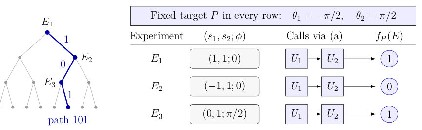
<figcaption class="paper-figure-caption"><b>Fig 1.</b> FIG. 1. A controlled query and a complete response path. In (a), known tester operations select the signed phase in Eq. (7) using one forward call to the process transition. The visible carrier starts and ends in |0⟩. The retained qubit C starts in |+⟩once per complete run and is measured after all transitions, with accepting projector onto (|0⟩+ eiϕ|1⟩)/ √</figcaption>
</figure>
</div>

<p><strong>Summary.</strong> This work develops a measure called 'sequential response capacity' to quantify how complex a quantum process can become given limited internal memory. It proves that quantum systems can achieve a logarithmic scaling in capacity with the number of steps, far surpassing classical limits. This establishes a fundamental benchmark for quantum advantage in sequential information processing tasks.</p>
<p><strong>Why it may be interesting.</strong> The quantitative comparison between quantum and classical capacity bounds, especially the logarithmic enhancement, provides a concrete measure of quantum advantage in sequential information processing tasks.</p>
<details>
<summary>Detailed structure</summary>
<p><strong>Main problem.</strong> The paper quantifies the 'sequential response capacity' of a quantum process that operates over multiple time steps while maintaining a fixed, finite internal memory.</p>
<p><strong>Main result.</strong> For fixed memory, the quantum capacity scales logarithmically with the number of time steps ($K \log K$), significantly exceeding the linear capacity of classical stochastic processes.</p>
<p><strong>Method.</strong> The analysis uses information-theoretic tools, relating capacity to the sequential fat-shattering dimension, and establishes lower bounds via specific constructions (e.g., time-dependent phase rotations).</p>
<p><strong>Model / system.</strong> The model involves quantum processes defined by sequences of CPTP maps ($\Phi_t$) acting on a visible input/output space and an internal quantum memory register of dimension $r$.</p>
<p><strong>Key observables.</strong> Sequential Response Capacity ($C_\gamma$), Response Probability ($f_P(E)$), and the operational distance between processes.</p>
<p><strong>Important parameters / regimes.</strong> Number of time steps ($K$), memory dimension ($r$), required probability separation gap ($\gamma$), and residual phase-flip probability ($e$).</p>
<p><strong>Assumptions / limitations.</strong> The main results assume ideal controls and weak residual phase noise after error correction to achieve the maximal logarithmic enhancement.</p>
<p><strong>Figures summary.</strong> Figure 1 illustrates the mechanism of a controlled query using a retained control qubit to accumulate relative phase across multiple steps.</p>
<p><strong>Paper structure.</strong> The paper progresses by defining the capacity, establishing the main theorem for fixed memory, comparing quantum vs. classical bounds, and finally analyzing the capacity degradation under known Pauli noise and dephasing.</p>
</details>
<details>
<summary>Abstract</summary>
<p>How complex can the responses of a quantum device become as it runs longer with a fixed internal memory? We quantify this complexity through sequential response capacity: how many adaptive testing stages, each using a fresh run, can continue to separate possible processes by a prescribed gap in response probabilities. For fixed system and memory sizes, we establish a tight law relating this capacity to run length and probability resolution. At fixed resolution, the capacity grows on the order of $K\log K$, where $K$ is the number of time steps in each run. Our construction attains this growth using time-dependent phase rotations on a single visible qubit with no additional internal memory; its tests give response probabilities exactly zero or one. Under the same tests, classical stochastic processes that measure in a fixed basis at every step have only linear capacity at fixed sizes and resolution. For phase sequences selected by a stored classical label, we then quantify how known independent Pauli noise changes this logarithmic enhancement. With ideal controls and weak residual phase noise after correction, we prove matching capacity bounds at a fixed small probability gap. These bounds identify the inverse residual phase-flip probability as the coherence timescale that limits the extra logarithmic growth.</p>
</details>
<p><sub><a href="#top">↑ back to top</a></sub></p>

<p><a id="paper-2610.01462"></a></p>
<h3 id="unbounded-separation-between-definite-and-indefinite-causal-order-in-finite-dimensional-quantum-metrology"><a href="http://arxiv.org/abs/2610.01462v1">Unbounded separation between definite and indefinite causal order in finite-dimensional quantum metrology</a></h3>
<p><strong>Authors:</strong> Yanglin Hu, Zi-Shen Li, Giulio Chiribella, Yuxiang Yang<br>
<strong>Type:</strong> theory · <strong>Category:</strong> quantum information and computing · <strong>PDF:</strong> <a href="https://arxiv.org/pdf/2610.01462v1">https://arxiv.org/pdf/2610.01462v1</a><br>
<strong>Analysis basis:</strong> full PDF text, analyzed in chunks
<strong>Topic relevance:</strong> <code>quantum measurements</code> <strong>2/5</strong></p>
<div class="figure-strip-hint">↔ Scroll figures horizontally</div>
<div class="paper-figures-scroll">
<figure class="paper-figure-card">
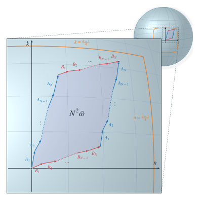
<figcaption class="paper-figure-caption"><b>Fig 1.</b> FIG. 1. The approximate accumulation of the geometric phase in a finite-dimensional phase space. Two trajectories are formed by applying two sets of N unknown phase-space vectors α1, . . . , αN corresponding to A1, . . . , AN (blue arrows) and β1, . . . , βN corresponding to B1, . . . , BN (red arrows) via Γ = p</figcaption>
</figure>
<figure class="paper-figure-card">
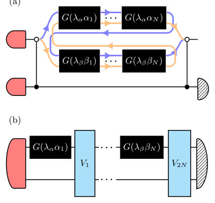
<figcaption class="paper-figure-caption"><b>Fig 2.</b> FIG. 2. Metrological strategies for phase-space displace- ments. (a) The strategy with indefinite causal order. A quantum switch routes the probe through two sets of displace- ments, G(λαα1), . . . , G(λααN) and G(λββ1), . . . , G(λββN), in a quantum superposition of two causal orders (blue and or- ange routines). The accumulated geometric phase is subse- quently extracted via a Ramsey measurement on the control qubit. (b) The strategy with definite causal order. The 2N displacements are applied in a fixed causal order, interleaved with arbitrary adaptive unitaries V1, . . . , V2N prior to the fi- nal measurement. The adaptive unitaries are not assumed to preserve energy.</figcaption>
</figure>
<figure class="paper-figure-card">
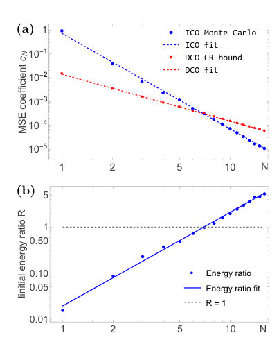
<figcaption class="paper-figure-caption"><b>Fig 3.</b> FIG. 3. (a) Scaling of the finite-sample MSE coefficient cN, defined by MSE ≃cN/ν, with respect to N for d ≃N 2. For each N, the blue circle represents the ICO coefficient, extracted by fitting the simulated MSE against ν−1 and av- eraging over randomly generated sets of displacements in the range [0.4, 0.6]. The red square represents the DCO coeffi- cient, obtained by computing the Cram´er–Rao lower bound at the same initial probe energy and averaging over the same sets of displacements as the ICO strategy. The dashed lines are log–log power-law fits. The fitted slopes are −4.0087 for ICO and −1.9724 for DCO, and the fitted Pearson correlation coefficients are −0.99928 for ICO and −0.99985...</figcaption>
</figure>
</div>

<p><strong>Summary.</strong> This paper proves that indefinite causal order (ICO) grants an unbounded energy advantage over definite causal order (DCO) when estimating a geometric phase in finite-dimensional quantum systems. By analyzing the scaling of the Mean Squared Error and required probe energy, the authors show that the advantage grows arbitrarily large with system parameters. This result extends the known benefits of ICO from infinite to finite quantum settings.</p>
<p><strong>Why it may be interesting.</strong> This work directly addresses a fundamental question in quantum metrology concerning the resource scaling advantage of causal structure, providing a concrete, quantifiable example of where ICO surpasses DCO even in finite systems.</p>
<details>
<summary>Detailed structure</summary>
<p><strong>Main problem.</strong> The paper investigates whether indefinite causal order (ICO) provides an unbounded advantage over definite causal order (DCO) in quantum metrology when restricted to finite-dimensional quantum systems.</p>
<p><strong>Main result.</strong> The authors prove that an unbounded energy-efficiency advantage exists for ICO over DCO in finite dimensions, meaning the required initial probe energy for DCO can be arbitrarily large compared to ICO for a fixed precision.</p>
<p><strong>Method.</strong> The analysis relies on establishing an approximate Weyl relation for discrete Gaussian wavepackets and comparing the scaling of the Mean Squared Error (MSE) for both causal orders.</p>
<p><strong>Model / system.</strong> The system is a finite-dimensional quantum system modeled using discrete position and momentum operators on a $d$-dimensional space, applied to estimating a geometric phase.</p>
<p><strong>Key observables.</strong> Geometric phase ($\omega$), Mean Squared Error (MSE), and initial probe energy required for estimation.</p>
<p><strong>Important parameters / regimes.</strong> The advantage is shown to be unbounded in the pre-asymptotic regime where the number of measurement shots $
u$ is bounded by $\mathcal{O}(\exp(\pi d/16)/	ext{poly}(d))$.</p>
<p><strong>Assumptions / limitations.</strong> The analysis requires the phase-space centers to remain in the bulk region to ensure the boundary error term is exponentially small.</p>
<p><strong>Figures summary.</strong> Figure 1 illustrates the approximate accumulation of the geometric phase in a finite-dimensional phase space. Figure 2 compares the quantum switch implementation for ICO versus the fixed causal order for DCO.</p>
<p><strong>Paper structure.</strong> The paper first establishes the necessary mathematical tools, including the approximate Weyl relation for discrete Gaussian wavepackets. It then applies this to the metrology problem, comparing the scaling of the MSE and the required initial energy for ICO versus DCO to prove the unbounded separation.</p>
</details>
<details>
<summary>Abstract</summary>
<p>Indefinite causal order is known to offer enhancements in quantum metrology, notably including an unbounded advantage in the measurement of a geometric phase of a harmonic oscillator. This advantage, however, is specific to the infinite dimensional setting, and its finite dimensional analogue remains elusive, with recent findings suggesting that advantages in finite dimensions may be fundamentally limited to bounded constant factors. Here we show that, in fact, arbitrarily large advantages arise for finite dimensional systems in the finite sample regime. Specifically, we establish an unbounded separation between definite and indefinite causal order in the estimation of a geometric phase associated to two sets of $N$ displacements generated by discrete position and momentum operators on a $d$-dimensional quantum system: for any given constant $R$, there exist values of $N$ and $d=Ω(N^2)$ such that a strategy with indefinite order uses an initial probe with $R$ times less energy than the probe required by every strategy with definite order achieving the same mean squared error, whenever the number of measurement shots $ν$ is bounded as $ν=\mathcal{O}(\exp(πd/16)/\mathrm{poly}(d))$. In other words, indefinite order offers an energy saving that grows arbitrarily large with the parameters of the problem. To prove this result, we establish an approximate Weyl relation for discrete Gaussian wavepackets, which is of independent technical interest.</p>
</details>
<p><sub><a href="#top">↑ back to top</a></sub></p>

<p><a id="paper-2610.01844"></a></p>
<h3 id="ballistic-speed-and-potential-theoretic-recurrence-for-homogeneous-open-quantum-random-walks"><a href="http://arxiv.org/abs/2610.01844v1">Ballistic Speed and Potential-Theoretic Recurrence for Homogeneous Open Quantum Random Walks</a></h3>
<p><strong>Authors:</strong> Ameur Dhahri, Chul Ki Ko, Farrukh Mukhamedov, Hyun Jae Yoo<br>
<strong>Type:</strong> theory · <strong>Category:</strong> other · <strong>PDF:</strong> <a href="https://arxiv.org/pdf/2610.01844v1">https://arxiv.org/pdf/2610.01844v1</a><br>
<strong>Analysis basis:</strong> full PDF text, analyzed in chunks
<strong>Topic relevance:</strong> <code>Keldysh / 2PI / non-Gaussian methods</code> <strong>1/5</strong> · <code>correlated / nonlocal dissipation</code> <strong>1/5</strong> · <code>driven-dissipative phase transition</code> <strong>1/5</strong> · <code>methods for driven-dissipative</code> <strong>1/5</strong> · <code>non-equilibrium universality</code> <strong>1/5</strong></p>
<div class="figure-strip-hint">↔ Scroll figures horizontally</div>
<div class="paper-figures-scroll">
<figure class="paper-figure-card">

<figcaption class="paper-figure-caption"><b>Fig 1.</b> Figure 1. Local-to-global architecture of the main argument. The periodic local theorem controls time returns, while the centered resolvent singularity controls the spatial profile of Green functions and potential kernels.</figcaption>
</figure>
<figure class="paper-figure-card">

<figcaption class="paper-figure-caption"><b>Fig 2.</b> Figure 2. Parity mask for the one-dimensional simple symmetric walk. The periodic local theorem retains both peripheral Fourier points and produces the factor two on the admissible parity class, rather than imposing strong aperiodicity.</figcaption>
</figure>
<figure class="paper-figure-card">

<figcaption class="paper-figure-caption"><b>Fig 3.</b> Figure 3. Drift–effective-dimension classification in the primitive one-component regime. RMS speed detects drift, whereas recurrence also depends on the rank of the effective lattice.</figcaption>
</figure>
<figure class="paper-figure-card">

<figcaption class="paper-figure-caption"><b>Fig 4.</b> Figure 4. Two different aggregation laws in the reducible regime. Green occupa- tion potentials decompose linearly, whereas RMS transport averages the squared component drifts. A drift–dimension criterion for the component Green series additionally requires Assumption 5.3.</figcaption>
</figure>
</div>

<p><strong>Summary.</strong> This paper rigorously connects the macroscopic transport properties (ballistic speed) of Open Quantum Random Walks to their underlying potential-theoretic recurrence behavior. It establishes that the speed is determined by the drift norm, while recurrence depends on the effective dimension of the walk. The findings are vital for understanding how dissipation affects quantum transport in open systems.</p>
<p><strong>Why it may be interesting.</strong> This work provides rigorous mathematical tools to analyze non-unitary, dissipative quantum dynamics, which is crucial for modeling open quantum systems interacting with an environment.</p>
<details>
<summary>Detailed structure</summary>
<p><strong>Main problem.</strong> The study connects the root-mean-square (RMS) ballistic transport of Open Quantum Random Walks (OQRWs) to their potential-theoretic recurrence properties.</p>
<p><strong>Main result.</strong> The ballistic speed equals the drift norm, and the recurrence behavior (transience vs. recurrence) is determined by the effective dimension of the walk, showing recurrence in effective dimensions one and two for centered walks.</p>
<p><strong>Method.</strong> The analysis employs spectral theory, potential theory, and component decomposition to analyze the asymptotic behavior of the Green function and the walk's position moments.</p>
<p><strong>Model / system.</strong> The model is the Open Quantum Random Walk (OQRW), which describes dissipative quantum dynamics using positive local channels, contrasting with unitary quantum walks.</p>
<p><strong>Key observables.</strong> RMS ballistic speed ($v_{bal}$), recurrence (state-dependent vs. TOM sense), average drift, and Green function asymptotics.</p>
<p><strong>Important parameters / regimes.</strong> Effective lattice dimension, drift norm, and the spectral properties of the local channels.</p>
<p><strong>Assumptions / limitations.</strong> The analysis requires assumptions such as homogeneous walks, primitive local channels, and non-degenerate quadratic spectral terms.</p>
<p><strong>Figures summary.</strong> Figures illustrate aggregation laws in the reducible regime, showing linear decomposition for Green occupation potentials and averaging of squared component drifts for RMS transport.</p>
<p><strong>Paper structure.</strong> The paper develops the theory by first establishing local limit theorems and then using component decomposition to separately analyze the ballistic speed (related to drift) and the recurrence properties (related to potential theory).</p>
</details>
<details>
<summary>Abstract</summary>
<p>Our study connects root-mean-square ballistic transport to potential-theoretic recurrence for finite-range open quantum random walks. In homogeneous walks with primitive local channels, finitely many simple periodic Fourier peripheral eigenvalues, no nonzero stationary Fourier mode, and a nondegenerate quadratic spectral term, we prove a periodic uniform local limit theorem and recover exponential finite-set return bounds for nonzero drift. The centered case yields strong Green-function asymptotics in at least three dimensions, as well as potential-kernel asymptotics in one and two dimensions. According to these assumptions, the RMS ballistic speed equals the drift norm, nonzero drift indicates transience, and centered walks are recurring in effective dimensions one and two but transitory in higher dimensions. The low-dimensional finding shows a recurrence of the origin projection in TOM. For reducible walks, an explicit harmonic \(h\)-transform converts each absorption component to an OQRW, providing a detailed breakdown of Green occupation potentials. The squared RMS speed is the absorption-weighted mean of squared component drifts, but the reduced drift-dimension classification also needs specific component return estimations. A centered noncommuting family validates the fundamental spectral assumptions in all dimensions and provides explicit potential constants. Exact finite traps and sparse reflecting barriers provide a complementary nonhomogeneous method for zero speed and TOM recurrence.</p>
</details>
<p><sub><a href="#top">↑ back to top</a></sub></p>

<p><a id="paper-2610.01315"></a></p>
<h3 id="ep-flow-disordered-crystal-structure-prediction-without-site-level-annotations"><a href="http://arxiv.org/abs/2610.01315v1">EP-Flow: Disordered Crystal Structure Prediction without Site-Level Annotations</a></h3>
<p><strong>Authors:</strong> Qiuliang Liu, Liming Wu, Qi Li, Zhonglong Peng, Chang Chen, Xiaolong Chen, Wenbing Huang, Shifeng Jin<br>
<strong>Type:</strong> theory · <strong>Category:</strong> disordered systems and neural networks · <strong>PDF:</strong> <a href="https://arxiv.org/pdf/2610.01315v1">https://arxiv.org/pdf/2610.01315v1</a><br>
<strong>Analysis basis:</strong> full PDF text, analyzed in chunks
<strong>Topic relevance:</strong> <code>Keldysh / 2PI / non-Gaussian methods</code> <strong>1/5</strong> · <code>analog quantum simulation</code> <strong>1/5</strong> · <code>driven-dissipative phase transition</code> <strong>1/5</strong> · <code>methods for driven-dissipative</code> <strong>1/5</strong> · <code>non-equilibrium universality</code> <strong>1/5</strong></p>
<div class="figure-strip-hint">↔ Scroll figures horizontally</div>
<div class="paper-figures-scroll">
<figure class="paper-figure-card">

<figcaption class="paper-figure-caption"><b>Fig 1.</b> Figure 1: Formula transportation polytopes.</figcaption>
</figure>
<figure class="paper-figure-card">

<figcaption class="paper-figure-caption"><b>Fig 2.</b> Figure 2: Overview of EP-Flow for disordered crystal generation. (a) Disordered crystal represented by (A, F , l). (b) Occupancy matrix canonicalized from formula polytope P(1N, c) to double-centered space M0(N, M) via log-domain double centering, which recovers back by Sinkhorn projection. (c) Joint flow matching over (A′, F , l) conditioned on c, with projection back to A for the final structure.</figcaption>
</figure>
<figure class="paper-figure-card">

<figcaption class="paper-figure-caption"><b>Fig 3.</b> Figure 3: Reconstruction results for disordered functional materials. Each row compares predicted vs. ground-truth structures, with RMSD and OccMAE. Key-site occupancies are annotated; the rightmost column shows the site with largest occupancy error. Three disorder types are covered: oxygen-vacancy, interstitial/partial-occupancy, and mixed-cation/anion substitutional.</figcaption>
</figure>
<figure class="paper-figure-card">

<figcaption class="paper-figure-caption"><b>Fig 4.</b> Figure 4: Site-wise occupancy-pattern analysis.</figcaption>
</figure>
<figure class="paper-figure-card">

<figcaption class="paper-figure-caption"><b>Fig 5.</b> Figure 5: Element index map and MPDS Disorder-50 distribution. Left: the element-to-position index map used in this work. Right: the element-occurrence heatmap for the MPDS Disorder-50 subset.</figcaption>
</figure>
</div>

<p><strong>Summary.</strong> This paper introduces EP-Flow, a novel generative model for predicting disordered crystal structures directly from a chemical formula. It reformulates the problem using an Occupancy Distribution Matrix (ODM) constrained by a transportation polytope. By mapping this complex geometry into a shared latent space and using flow matching, EP-Flow accurately predicts both the site occupancies and the underlying crystal structure, outperforming existing methods.</p>
<p><strong>Why it may be interesting.</strong> While focused on materials science, the use of flow matching to enforce complex, high-dimensional geometric and physical constraints (like mass conservation) within a generative model framework is highly relevant to modeling quantum many-body states or complex quantum field configurations.</p>
<details>
<summary>Detailed structure</summary>
<p><strong>Main problem.</strong> The paper addresses the challenge of predicting crystal structures for intrinsically disordered materials without requiring explicit, site-level annotations of the disorder.</p>
<p><strong>Main result.</strong> EP-Flow achieves state-of-the-art performance on disordered CSP benchmarks by learning a flow that respects the complex constraints of the chemical formula.</p>
<p><strong>Method.</strong> It employs an Occupancy Distribution Matrix (ODM) formulation, canonicalizes the resulting polytope into a shared latent space, and uses a marginal-constrained flow matching framework.</p>
<p><strong>Model / system.</strong> The system is a crystalline solid exhibiting disorder (substitutional mixing, vacancies), modeled by an ODM that must satisfy coupled site-wise occupancy and mass-conservation constraints, defining a transportation polytope.</p>
<p><strong>Key observables.</strong> Match Rate, Root Mean Square Deviation (RMSD), Occupancy Mean Absolute Error (OccMAE), and the Occupancy Distribution Matrix (ODM).</p>
<p><strong>Important parameters / regimes.</strong> The model jointly generates occupancies, fractional coordinates, and lattice parameters; the process relies on Sinkhorn projection for constraint enforcement.</p>
<p><strong>Assumptions / limitations.</strong> The core assumption is that the problem can be mapped to a continuous flow matching framework by canonicalizing the heterogeneous polytope into a shared, double-centered space.</p>
<p><strong>Figures summary.</strong> Figures illustrate the crystal representation $(A, F, l)$, the canonicalization of the polytope via log-domain double centering, and the joint flow generation process, alongside structural reconstruction trajectories.</p>
<p><strong>Paper structure.</strong> The paper first defines the problem using the ODM and its associated transportation polytope. It then introduces EP-Flow, detailing the canonicalization to a shared latent space, the flow learning mechanism, and the final recovery via Sinkhorn projection for joint generation of occupancies, coordinates, and lattice parameters.</p>
</details>
<details>
<summary>Abstract</summary>
<p>Generative models have made rapid progress in ordered crystal structure prediction, yet many functional materials are intrinsically disordered, with substitutional mixing, vacancies, or interstitial species controlling their properties. Existing crystal generators either assume deterministic site occupations or require site-level disorder annotations, which are often unavailable when the chemical formula is the primary input. We formulate disordered crystal structure prediction through an Occupancy Distribution Matrix (ODM), a continuous site-by-species representation that unifies ordered crystals, solid solutions, vacancy disorder, and interstitial occupancy. A valid ODM must satisfy coupled site-wise occupancy, mass-conservation, and non-negativity constraints, placing each sample on a formula-dependent transportation polytope. We propose Entropic Polytope Flow (EP-Flow), a marginal-constrained flow matching framework that canonicalizes heterogeneous polytopes into a shared double-centered space, learns a marginal-preserving flow, and recovers feasible occupancies through a Sinkhorn inverse map. By jointly generating occupancies, fractional coordinates, and lattice parameters, EP-Flow achieves state-of-the-art performance on formula-conditioned disordered CSP benchmarks derived from COD and MPDS, substantially outperforming adapted ordered-crystal generators. Analyses further show that EP-Flow recovers sparse and chemically meaningful local disorder patterns rather than merely matching global composition statistics.</p>
</details>
<p><sub><a href="#top">↑ back to top</a></sub></p>

<p><a id="paper-2610.01051"></a></p>
<h3 id="anisotropic-medium-range-order-uncovers-dynamic-crossovers-in-glass-forming-liquids"><a href="http://arxiv.org/abs/2610.01051v1">Anisotropic medium-range order uncovers dynamic crossovers in glass-forming liquids</a></h3>
<p><strong>Authors:</strong> Kamlesh Mishra, Rajesh Ganapathy, Walter Kob<br>
<strong>Type:</strong> theory · <strong>Category:</strong> disordered systems and neural networks · <strong>PDF:</strong> <a href="https://arxiv.org/pdf/2610.01051v1">https://arxiv.org/pdf/2610.01051v1</a><br>
<strong>Analysis basis:</strong> full PDF text, analyzed in chunks
<strong>Topic relevance:</strong> <code>analog quantum simulation</code> <strong>1/5</strong> · <code>scars &amp; prethermalization</code> <strong>1/5</strong></p>
<div class="figure-strip-hint">↔ Scroll figures horizontally</div>
<div class="paper-figures-scroll">
<figure class="paper-figure-card">

<figcaption class="paper-figure-caption"><b>Fig 1.</b> FIG. 1. Connection between particle mobility and structural length scales. (a) Schematic of the local</figcaption>
</figure>
<figure class="paper-figure-card">

<figcaption class="paper-figure-caption"><b>Fig 2.</b> FIG. 2. Particle cage structure is anisotropic and extends to medium-range distances. (a) The local coordinate</figcaption>
</figure>
<figure class="paper-figure-card">

<figcaption class="paper-figure-caption"><b>Fig 3.</b> FIG. 3. Evolution of the asymmetric cage structure upon cooling. (a) Directional correlation function,</figcaption>
</figure>
</div>

<p><strong>Summary.</strong> This work analyzes glass-forming liquids to determine if structural changes underpin dynamic crossovers near the glass transition. By introducing a novel four-point correlation function, the authors find that the degree of cage anisotropy peaks precisely at the crossover temperatures. This establishes that medium-range structural order, extending beyond local cages, is essential for understanding the complex relaxation dynamics of supercooled liquids.</p>
<p><strong>Why it may be interesting.</strong> The focus on structural signatures (medium-range order) dictating dynamic transitions in supercooled liquids is highly relevant to understanding complex many-body dynamics, which shares conceptual links with glassy dynamics studied in quantum many-body systems.</p>
<details>
<summary>Detailed structure</summary>
<p><strong>Main problem.</strong> The paper investigates the structural basis for dynamic crossovers observed in glass-forming liquids at high-T and low-T crossover temperatures.</p>
<p><strong>Main result.</strong> The authors show that the degree of cage anisotropy, quantified by a structural length scale difference, peaks at both crossover temperatures, linking the dynamics to anisotropic medium-range order.</p>
<p><strong>Method.</strong> They introduce and utilize a novel four-point correlation function and analyze the angular power spectrum ($S_
ho(l, r)$) derived from molecular dynamics simulations.</p>
<p><strong>Model / system.</strong> The study uses molecular dynamics simulations on a glass-forming liquid, specifically a binary Lennard-Jones mixture, to probe particle dynamics near the glass transition.</p>
<p><strong>Key observables.</strong> Structural length scale characterizing cage anisotropy, angular power spectrum $S_
ho(l, r)$, and the difference between structural length scales of slow and fast particles.</p>
<p><strong>Important parameters / regimes.</strong> High-T and low-T crossover temperatures ($T_o, T_X$), and the intermediate range structural length scale.</p>
<p><strong>Assumptions / limitations.</strong> The analysis assumes that the structural information encoded in the four-point correlation function is sufficient to characterize the underlying physics of the dynamic crossovers.</p>
<p><strong>Figures summary.</strong> Figures illustrate the LCS schematic, 3D density distributions for different particle groups, and the angular power spectra $S_
ho(l, r)$ showing anisotropic features at intermediate length scales.</p>
<p><strong>Paper structure.</strong> The paper progresses by introducing the novel correlation function, applying it to molecular dynamics simulations to calculate density fields and power spectra, and finally interpreting the temperature dependence of the resulting structural length scales to link them to the observed dynamic crossovers.</p>
</details>
<details>
<summary>Abstract</summary>
<p>On cooling liquids towards their glass-transition temperature, the dramatic increase of their relaxation times is accompanied by changes in particle dynamics at two distinct temperatures: A high-T crossover, where particles become temporarily caged by their neighbors, and a low-T crossover, where the cage escape mechanism changes. While there is some evidence that the former is associated with a change in local particle arrangement, no structural modification has so far been detected across the low-T crossover, fueling scepticism about the relevance of structure for glassy dynamics. Here, we introduce a novel four-point correlation function which allows to determine a structural length scale characterizing cage anisotropy. Extensive molecular dynamics simulations reveal that this scale, as well as the mean structural length scale of the glass-former, extends into the medium range, i.e., significantly exceeds the particle size. Strikingly, the difference between these two scales - a measure of the degree of cage anisotropy - peaks at both crossover temperatures. We discuss how the presence of these peaks enables understanding the nature of the change in the microscopic transport mechanism at the two temperatures, thereby linking both dynamical crossovers to a single structural observable, the anisotropic medium-range order. This fundamental insight demonstrates that structure, extending well-beyond the local cage, is an essential ingredient for understanding the relaxation dynamics of deeply supercooled liquids.</p>
</details>
<p><sub><a href="#top">↑ back to top</a></sub></p>

<p><a id="paper-2610.00452"></a></p>
<h3 id="anyon-proliferation-and-anyon-superconductivity-in-higgsing-transitions-via-conformal-embeddings"><a href="http://arxiv.org/abs/2610.00452v1">Anyon Proliferation and Anyon Superconductivity in Higgsing Transitions via Conformal Embeddings</a></h3>
<p><strong>Authors:</strong> Diego García-Sepúlveda, Da-Chuan Lu<br>
<strong>Type:</strong> theory · <strong>Category:</strong> strongly correlated electrons · <strong>PDF:</strong> <a href="https://arxiv.org/pdf/2610.00452v1">https://arxiv.org/pdf/2610.00452v1</a><br>
<strong>Analysis basis:</strong> full PDF text, analyzed in chunks
<strong>Topic relevance:</strong> <code>Keldysh / 2PI / non-Gaussian methods</code> <strong>1/5</strong> · <code>analog quantum simulation</code> <strong>1/5</strong></p>
<div class="figure-strip-hint">↔ Scroll figures horizontally</div>
<div class="paper-figures-scroll">
<figure class="paper-figure-card">

<figcaption class="paper-figure-caption"><b>Fig 1.</b> Low-resolution page preview, page 2</figcaption>
</figure>
<figure class="paper-figure-card">

<figcaption class="paper-figure-caption"><b>Fig 2.</b> Low-resolution page preview, page 3</figcaption>
</figure>
<figure class="paper-figure-card">

<figcaption class="paper-figure-caption"><b>Fig 3.</b> Low-resolution page preview, page 4</figcaption>
</figure>
<figure class="paper-figure-card">

<figcaption class="paper-figure-caption"><b>Fig 4.</b> Low-resolution page preview, page 5</figcaption>
</figure>
<figure class="paper-figure-card">

<figcaption class="paper-figure-caption"><b>Fig 5.</b> Low-resolution page preview, page 6</figcaption>
</figure>
</div>

<p><strong>Summary.</strong> This theoretical work analyzes topological phase transitions in (2+1)d systems described by Chern-Simons theories. It uses conformal embeddings and Higgsing mechanisms to study how the system's topological order changes, particularly focusing on the role of anyon proliferation. The findings provide detailed predictions about the emergence of anyon superconductivity in various quantum materials models.</p>
<p><strong>Why it may be interesting.</strong> The deep connection between topological order, gauge theory dynamics (Higgsing), and fractionalized excitations (anyons) is central to understanding exotic states of matter like fractional quantum Hall liquids, which are key areas of condensed matter theory.</p>
<details>
<summary>Detailed structure</summary>
<p><strong>Main problem.</strong> The paper investigates how anyon proliferation drives phase transitions, specifically within the context of Chern-Simons (CS) Higgsing transitions mediated by conformal embeddings.</p>
<p><strong>Main result.</strong> The analysis shows that these transitions can relate phases with equivalent intrinsic topological order, leading to phenomena like anyon condensation and the realization of non-Abelian anyon superconductivity.</p>
<p><strong>Method.</strong> The authors employ techniques from Conformal Field Theory (CFT), analyzing RG flow diagrams, and using screening arguments based on Casimir invariants to determine the infrared (IR) anyon content.</p>
<p><strong>Model / system.</strong> The model involves (2+1)d CS-matter theories coupled to scalar fields, describing topological order characterized by Modular Tensor Categories. Examples include $SO(N)_2 	o SU(N)_1$ transitions.</p>
<p><strong>Key observables.</strong> Topological order (MTCs), anyon content (fusion/braiding), global $U(1)_B$ symmetry realization, and the superconducting order parameter $\Delta$.</p>
<p><strong>Important parameters / regimes.</strong> The CS level ($k$), the mass term sign ($m_2$), and the specific gauge groups involved (e.g., $SU(N)$, $SO(N)$).</p>
<p><strong>Assumptions / limitations.</strong> The analysis often assumes $k=1$ for conformal embeddings, and the identification of the IR anyon via screening is treated as a heuristic candidate.</p>
<p><strong>Figures summary.</strong> The notes mention RG flow diagrams illustrating phase transitions between Higgs and Un-Higgsed phases, and equations detailing tensor products and representations used in screening calculations.</p>
<p><strong>Paper structure.</strong> The paper builds by first establishing the framework of CS Higgsing transitions via conformal embeddings, then analyzing specific group transitions ($SO(N) 	o SU(N)$), and finally applying screening arguments to identify candidate anyons in the resulting phases.</p>
</details>
<details>
<summary>Abstract</summary>
<p>We discuss (2+1)d Chern-Simons Higgsing transitions based on conformal embeddings and their relation to the proliferation of anyons. These transitions preserve or enlarge the intrinsic topological order despite reducing the gauge group. When the topological order is enlarged, the two phases differ by anyon condensation, and the transition takes an Abelian topological order to a non-Abelian one. In the $SO(N)_{2} \hookrightarrow SU(N)_{1}$ family with $N \geq 3$, the two semiclassical regimes have equivalent intrinsic topological orders but distinct realizations of a global $U(1)$ symmetry. For odd $N$, these are non-Abelian realizations of transitions from fermionic $1/N$ Laughlin states to charge-$2e$ anyon superconductivity coexisting with the same chiral $\mathbb{Z}_{N}$ topological order. The scalar representations are always non-integrable with respect to the UV Chern-Simons level and therefore do not directly label anyons of the un-Higgsed phase, despite defining Wilson lines in the UV. Using heuristic adjoint screening, we propose candidate anyons in the un-Higgsed phase, while branching under the Higgs subgroup reveals channels corresponding to condensable anyons of the Higgs phase. We further construct a $\mathrm{Spin}(16)_{1} \to \mathrm{Spin}(9)_{2}$ transition admitting a condensable algebra that contains a non-Abelian anyon but not all of the allowed gaugable channels in its self-fusion.</p>
</details>
<p><sub><a href="#top">↑ back to top</a></sub></p>

<p><a id="paper-2610.01860"></a></p>
<h3 id="approximation-theorems-for-fermionic-gaussian-states"><a href="http://arxiv.org/abs/2610.01860v1">Approximation theorems for fermionic Gaussian states</a></h3>
<p><strong>Authors:</strong> Amir-Reza Negari, Farzin Salek, Zoltán Zimborás, Aram Harrow, Patrick Hayden, Jens Eisert<br>
<strong>Type:</strong> theory · <strong>Category:</strong> statistical mechanics · <strong>PDF:</strong> <a href="https://arxiv.org/pdf/2610.01860v1">https://arxiv.org/pdf/2610.01860v1</a><br>
<strong>Analysis basis:</strong> full PDF text, analyzed in chunks
<strong>Topic relevance:</strong> <code>Keldysh / 2PI / non-Gaussian methods</code> <strong>1/5</strong> · <code>analog quantum simulation</code> <strong>1/5</strong></p>
<div class="figure-strip-hint">↔ Scroll figures horizontally</div>
<div class="paper-figures-scroll">
<figure class="paper-figure-card">

<figcaption class="paper-figure-caption"><b>Fig 1.</b> FIG. 1. A two-dimensional lattice illustrating mutual information and conditional mutual information. In panel (a), A and C are two separated regions. In panel (b), B denotes a finite buffer region between A and C, so that one considers the conditional mutual information Iρ(A : C | B).</figcaption>
</figure>
</div>

<p><strong>Summary.</strong> This work develops quantitative approximation theorems for fermionic Gaussian states by analyzing constraints on their covariance matrices. It shows that structural properties like high connectivity, exchangeability, or spatial separation force the state to be close to a product state. These results provide powerful, covariance-based tools for approximating complex many-body systems.</p>
<p><strong>Why it may be interesting.</strong> The direct derivation of approximation bounds from covariance-level structure provides powerful, quantitative tools for understanding how local correlations dictate global thermodynamic properties in many-body systems.</p>
<details>
<summary>Detailed structure</summary>
<p><strong>Main problem.</strong> To establish quantitative approximation theorems for fermionic Gaussian states, showing that structural constraints force the state to be close to a simpler, product-like state.</p>
<p><strong>Main result.</strong> The paper derives product-state approximations for high-degree graphs, proves a finite fermionic Gaussian de Finetti theorem, and establishes $O(r^{-1/2})$ trace-norm recoverability estimates for spatially clustering states.</p>
<p><strong>Method.</strong> The analysis is conducted directly at the level of the Majorana covariance matrix, leveraging a core 'covariance monogamy' constraint.</p>
<p><strong>Model / system.</strong> The system is fermionic Gaussian states, which are characterized by their covariance matrix and arise from quadratic, noninteracting fermionic Hamiltonians.</p>
<p><strong>Key observables.</strong> Covariance matrices, ground-state energy, finite-temperature free energy, conditional mutual information $I_
ho(A : C | B)$.</p>
<p><strong>Important parameters / regimes.</strong> Graph degree $D$, copy number $k$, separation distance $r$, and the error scaling $O(D^{-1/2})$ or $O(r^{-1/2})$.</p>
<p><strong>Assumptions / limitations.</strong> The analysis is restricted to the Gaussian class of states, and the high-degree results apply to quadratic Hamiltonians.</p>
<p><strong>Paper structure.</strong> The paper builds its results by showing that the covariance-level structure imposes a monogamy constraint, which is then applied in three distinct physical contexts: high connectivity (energy approximation), exchangeability (de Finetti theorem), and spatial separation (recoverability estimates).</p>
</details>
<details>
<summary>Abstract</summary>
<p>A recurring principle in many-body physics is that sufficiently distributed interactions or correlations lead to an effectively mean-field description. For fermionic Gaussian states, we establish a quantitative version of this principle directly at the level of Majorana covariance matrices. The main observation is that the admissibility condition for fermionic covariance matrices imposes a quantitative monogamy constraint on two-point correlations: a fixed region has only a bounded covariance budget to distribute among many disjoint regions. We use this principle in three directions. First, for quadratic fermionic Hamiltonians on finite simple graphs of high degree, we obtain product-state approximations to both the ground-state energy and the finite-temperature free energy, with error of order \(D^{-1/2}\) for \(D\)-regular graphs. Second, we prove a finite fermionic Gaussian de Finetti theorem: a \(k\)-copy Gaussian state that is \(n\)-exchangeable under graded fermionic copy permutations is \(O(k/n)\)-close in trace norm to the product of its one-copy marginal. In particular, infinite exchangeability within the Gaussian class implies exact product structure. Third, for spatial fermionic Gaussian states with exponentially clustering mutual information, we prove that the conditional mutual information across a separating buffer decays as \(O(r^{-1})\), and hence, by recoverability, the state admits an \(O(r^{-1/2})\) trace-norm approximation by a recovered state. These results show that product and de Finetti approximations and recoverability estimates for fermionic Gaussian systems can all be derived directly from covariance-level structure.</p>
</details>
<p><sub><a href="#top">↑ back to top</a></sub></p>

<p><a id="paper-2610.00472"></a></p>
<h3 id="fractional-anomalous-determinants-and-the-chiral-phase-transition"><a href="http://arxiv.org/abs/2610.00472v1">Fractional anomalous determinants and the chiral phase transition</a></h3>
<p><strong>Authors:</strong> Robert D. Pisarski<br>
<strong>Type:</strong> theory · <strong>Category:</strong> statistical mechanics · <strong>PDF:</strong> <a href="https://arxiv.org/pdf/2610.00472v1">https://arxiv.org/pdf/2610.00472v1</a><br>
<strong>Analysis basis:</strong> full PDF text, analyzed in chunks
<strong>Topic relevance:</strong> <code>Keldysh / 2PI / non-Gaussian methods</code> <strong>1/5</strong> · <code>analog quantum simulation</code> <strong>1/5</strong></p>
<div class="figure-strip-hint">↔ Scroll figures horizontally</div>
<div class="paper-figures-scroll">
<figure class="paper-figure-card">

<figcaption class="paper-figure-caption"><b>Fig 1.</b> Low-resolution page preview, page 2</figcaption>
</figure>
<figure class="paper-figure-card">

<figcaption class="paper-figure-caption"><b>Fig 2.</b> Low-resolution page preview, page 3</figcaption>
</figure>
<figure class="paper-figure-card">

<figcaption class="paper-figure-caption"><b>Fig 3.</b> Low-resolution page preview, page 4</figcaption>
</figure>
<figure class="paper-figure-card">

<figcaption class="paper-figure-caption"><b>Fig 4.</b> Low-resolution page preview, page 5</figcaption>
</figure>
<figure class="paper-figure-card">

<figcaption class="paper-figure-caption"><b>Fig 5.</b> Low-resolution page preview, page 6</figcaption>
</figure>
</div>

<p><strong>Summary.</strong> This theoretical work analyzes the chiral phase transition in QCD-like theories by proposing that the anomalous U(1)A symmetry breaking involves fractional powers of the anomalous determinant below the critical temperature. The model predicts the transition is generally second order and suggests specific lattice QCD measurements to test the theory's predictions regarding the anomalous terms.</p>
<p><strong>Why it may be interesting.</strong> While focused on QCD, the concept of a phase transition governed by a change in the functional form of the effective theory (from integer to fractional powers) is analogous to critical phenomena studied in many-body systems.</p>
<details>
<summary>Detailed structure</summary>
<p><strong>Main problem.</strong> The paper investigates the anomalous terms governing the chiral phase transition in QCD-like theories, specifically focusing on the appearance of fractional powers of the anomalous determinant below the critical temperature.</p>
<p><strong>Main result.</strong> The model predicts that the chiral phase transition is generically of second order, with specific exceptions for one and three flavors, and proposes a generalized framework for the anomalous determinant powers.</p>
<p><strong>Method.</strong> The approach involves constructing a 'syncretic model' for the effective Lagrangian, extending concepts from the 't Hooft limit to arbitrary flavor ratios, and suggesting lattice QCD comparisons for verification.</p>
<p><strong>Model / system.</strong> The system is QCD-like theories undergoing a chiral phase transition at temperature T_chi. The model incorporates the anomalous U(1)A symmetry breaking, which is governed by powers of the anomalous determinant, $\sim (\det \Phi)^Q$.</p>
<p><strong>Key observables.</strong> Chiral condensate, $\pi_a$ and $a_0$ propagators, topological charge $Q$, and the order of the chiral phase transition.</p>
<p><strong>Important parameters / regimes.</strong> Temperature T (relative to T_chi), number of colors $N_c$, number of flavors $N_f$, and the topological charge $Q$ (integer vs. fractional).</p>
<p><strong>Assumptions / limitations.</strong> The primary assumption is that topological charge $Q$ becomes fractional ($Q = 	ext{integer} / N_c$) in the chirally broken phase ($T < T_\chi$), leading to fractional powers in the effective Lagrangian.</p>
<p><strong>Paper structure.</strong> The paper develops the theoretical framework by contrasting the behavior of the anomalous determinant above (integral powers) and below (fractional powers) the chiral transition temperature T_chi, culminating in testable predictions for lattice QCD.</p>
</details>
<details>
<summary>Abstract</summary>
<p>At high temperature instantons form a dilute gas, so in QCD-like theories the breaking of the anomalous $U(1)_A$ symmetry is given by integral powers of the anomalous determinant, $\sim (\det Φ)^{Q}$, where $Φ\sim \overline{q}_L q_R$ is bilinear in the quark fields, and with untwisted boundary conditions, the topological charge, $Q$, is an integer. A syncretic model is constructed, which is manifestly "beyond Landau". In the chiral limit, at temperatures above the chiral phase transition, $T > T_χ$, only integral powers of the anomalous determinant appear. Below $T_χ$, following 't Hooft et al. I assume that the topological charge $Q$ is fractional, as an integer times $1/N_c$, where $N_c$ is the number of colors. I suggest that consequently, fractional powers of the anomalous determinant appear in the chiral effective Lagrangian. For $N_f$ degenerate flavors, this generalizes the Witten-Veneziano term, valid for small $N_f/N_c$, to arbitrary $N_f/N_c$. In this model the chiral phase transition is generically of second order. The two exceptions are for one flavor, where it is probably crossover, and three flavors, where it could well be weakly first order. This can be tested in lattice QCD with $2+1$ flavors by comparing the (known) temperature dependence of the difference of the $π^a$ and $a_0^a$ propagators, to the chiral condensate of the strange quark, between $T_χ$ and $\sim 2 \, T_χ$. Analogous measurements are possible for one to four degenerate flavors about $T_χ$. Lastly, I propose an operator for baryon number in the symmetric phase.</p>
</details>
<p><sub><a href="#top">↑ back to top</a></sub></p>

<p><a id="paper-2610.00810"></a></p>
<h3 id="local-geometry-of-the-fermi-surface-and-its-effect-on-the-electronic-characteristics-of-normal-metals"><a href="http://arxiv.org/abs/2610.00810v1">Local geometry of the Fermi surface and its effect on the electronic characteristics of normal metals</a></h3>
<p><strong>Authors:</strong> N. A. Zimbovskaya<br>
<strong>Type:</strong> theory · <strong>Category:</strong> strongly correlated electrons · <strong>PDF:</strong> <a href="https://arxiv.org/pdf/2610.00810v1">https://arxiv.org/pdf/2610.00810v1</a><br>
<strong>Analysis basis:</strong> full PDF text, analyzed in chunks
<strong>Topic relevance:</strong> <code>Keldysh / 2PI / non-Gaussian methods</code> <strong>1/5</strong> · <code>analog quantum simulation</code> <strong>1/5</strong></p>
<div class="figure-strip-hint">↔ Scroll figures horizontally</div>
<div class="paper-figures-scroll">
<figure class="paper-figure-card">

<figcaption class="paper-figure-caption"><b>Fig 1.</b> Figure 1. (a) Schematic plots of a FS with a complex profile including nearly cylindrical strips and kink lines and (b) profiles of the cross sections of an ellipsoid-like FS flattened at the points p2; 0; 0†.</figcaption>
</figure>
<figure class="paper-figure-card">

<figcaption class="paper-figure-caption"><b>Fig 2.</b> Figure 2. (a) Examples of zero-curvature lines on FSs of metals. (b) The surface element of a FS. The principal curvature radii of the shown element are R1 and R2; n is a normal vector to the surface.</figcaption>
</figure>
<figure class="paper-figure-card">

<figcaption class="paper-figure-caption"><b>Fig 3.</b> Figure 3. Schematic plots of FSs shaped as corrugated cylinders (a) with a cosine warping corresponding to energy±momentum relation (7) and (b) with complex profiles.</figcaption>
</figure>
<figure class="paper-figure-card">

<figcaption class="paper-figure-caption"><b>Fig 4.</b> Figure 4. The conductivity component sxx o; q† including the contribution from a zero-curvature segment on the FS at large q o=qv 5 1†: (a) the curves are plotted at Z ˆ 0:2 and b ˆ ÿ0:8, ÿ0:7, ÿ0:6, ÿ0:4, and ÿ0:2 from top down. (b) The curves are plotted at b ˆ ÿ0:6 and Z ˆ 0:2, 0.1, 0.05, 0.03, 0.01 from top down.</figcaption>
</figure>
<figure class="paper-figure-card">

<figcaption class="paper-figure-caption"><b>Fig 5.</b> Figure 5. Frequency dependences of the real DR† and imaginary DH† parts of the first correction to the leading term in the surface impedance expansion in inverse powers of the anomaly parameter. The curves are plotted at Z ˆ 0:01, b ˆ ÿ0:9; Z ˆ 0:02, b ˆ ÿ0:8 (dashed lines) and Z ˆ 0:1, b ˆ ÿ0:5; Z ˆ 0:1, b ˆ ÿ0:4 (dashed-dotted lines). Solid lines represent the real and imaginary parts of the first correction to the leading approximation for the impedance of a metal whose FS does not include nearly cylindrical or flattened segments.</figcaption>
</figure>
</div>

<p><strong>Summary.</strong> This theoretical work examines how subtle, local geometric features on a material's Fermi surface can dramatically influence its electrical and magnetic response to high-frequency external stimuli. By analyzing the density of states enhancement near points of zero curvature, the authors predict observable anomalies in properties like surface impedance and magnetoacoustic oscillations. The paper highlights that the response is highly directional and sensitive to the specific local structure of the electron energy bands.</p>
<p><strong>Why it may be interesting.</strong> While focused on metals, the concept of how local geometry dictates macroscopic response is relevant to understanding boundary effects or dimensionality crossovers in quantum systems, which can be analogous to engineered quantum structures.</p>
<details>
<summary>Detailed structure</summary>
<p><strong>Main problem.</strong> The paper investigates how fine geometric features on the Fermi surface (FS) of normal metals significantly alter their electronic and galvanomagnetic responses to high-frequency external disturbances.</p>
<p><strong>Main result.</strong> Local anomalies in FS geometry, such as points of zero curvature or near-cylindrical strips, can cause disproportionately large changes in observable properties because the response becomes dominated by carriers near these specific regions.</p>
<p><strong>Method.</strong> The analysis employs theoretical modeling using phenomenological descriptions of local FS shapes, focusing on the density of states (DOS) enhancement near geometric singularities.</p>
<p><strong>Model / system.</strong> The system under study is a conventional normal metal or a layered conductor, modeled using the geometry of its Fermi surface. The analysis considers the response of conduction electrons to external fields.</p>
<p><strong>Key observables.</strong> Galvanomagnetic properties, sound wave attenuation/velocity shift, surface impedance, and magnetic quantum oscillations.</p>
<p><strong>Important parameters / regimes.</strong> High frequency of external disturbances, direction of disturbance propagation, and external magnetic field direction.</p>
<p><strong>Assumptions / limitations.</strong> The analysis relies on phenomenological models for local FS shapes, which are assumed to be sufficient for capturing the essential physics of the anomalies.</p>
<p><strong>Figures summary.</strong> Figures schematically illustrate complex FS profiles, including nearly cylindrical strips and kink lines, and show the mathematical definition of the surface element using principal radii.</p>
<p><strong>Paper structure.</strong> The paper proceeds by defining the problem—the sensitivity of electronic properties to FS geometry—and then developing the theoretical framework by analyzing how local curvature anomalies enhance the DOS, leading to predictions for observable effects in various transport phenomena.</p>
</details>
<details>
<summary>Abstract</summary>
<p>Fine features in the Fermi surface geometry, such as nearly cylindrical or nearly paraboloidal strips or local flattenings, are examined as regards their effect on the electronic, mainly galvanomagnetic, properties of metals. It is shown that under certain conditions, these features may significantly change the way a conventional normal metal or a layered structure with metallic conductivity responds to high- frequency external disturbances. All of the effects considered appear to be very sensitive to the disturbance propagation direction and/or to that of the external magnetic field. Experimental possibilities of observing the described effects are discussed.</p>
</details>
<p><sub><a href="#top">↑ back to top</a></sub></p>
<hr>
<p>
<a href="index.html">← Index</a>
 · <a href="papers_05.html">← Previous</a> · <a href="papers_07.html">Next →</a>
</p>
<hr>

</body>
</html>
